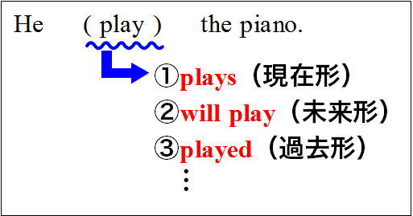
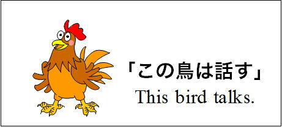
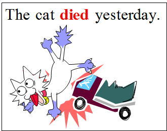
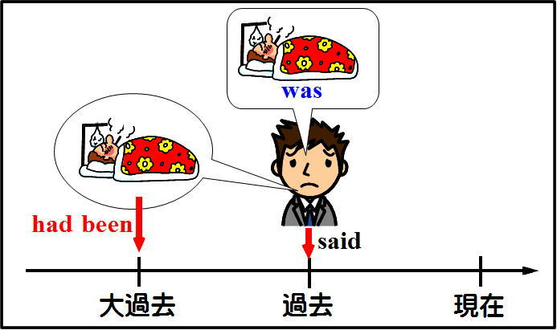

| どうしてそうなる 英文法＆イディオム 1 時制 | |
| 橋 明男 | |
| (2013) | |
執筆者紹介
（氏名）橋 明男（はしあきお）
（学歴）都立西高卒業。東大文一合格、東大法学部卒。
（職業）東京都内で学習塾を経営。これまでに大学受験英語の参考書を多数執筆。
「どうしてそうなる英文法＆イディオム」について
全体の構成として
第一部が英文法、
第二部がイディオム
です。
（第一部英文法について）
これまでの英文法の学習は退屈な丸暗記が中心でした。
しかし「どうしてそうなるのか」がわかると、勉強は楽しくなります。
そこで「理屈がわかれば勉強は楽しい」を基本理念に、「どうしてそうなるのか」をわかりやすく解説したのが本書です。
「大学受験に必要だからイヤイヤ学ぶ」ではなく、
「どうしてそうなるのか、もっと知りたい」という気持ちになれる文法書を目指しました。
（第二部イディオムについて）
第一部（英文法）と同様、「どうしてこの熟語が生まれたのか」を解説します。
このような説明ができないイディオム（熟語）は、全熟語の10％ほどしかありません。
残った全熟語のおよそ90％は、解説を読めばきっと「なるほど」と思って頂けるでしょう。
そういう熟語はすぐに覚えられますし、たとえ忘れかけたとしても「理解の糸」を手がかりに、記憶をたぐり寄せることができます。
ここでも「なるほど」と理解できれば、勉強は楽しくなるのはもちろんです。
つまり理屈を理解すれば、楽しく学べて、覚えやすく忘れにくくなるわけです。
英文法も熟語も退屈な丸暗記はやめて、楽しく勉強しましょう。
＜対象読者＞
①トップレベルの大学受験生（高3生、浪人生）および、高校1・２年生。
具体的には明治・青学・立教などのいわゆるMarchから、早慶・旧帝大を志望される方を念頭に置いています。
②TOEIC・英検などの試験に向けて英文法を学ばれている方（大学生・社会人）。
③英文法が苦手な先生方。
高校生を指導されている学校の先生方の中には、英文法が苦手だという方が結構多くいらっしゃるようです。そのような場合は本書を活用していただければ、学校の授業を楽しい(interesting)ものにする一助になるかもしれません。
＜本書の構成と読み方＞
本書は「解説」部分と「問題演習」の部分に大きく分けられます。
「解説」の部分は、理解することを第一にお読み下さい。
「問題演習」は【確認問題】と表記しています。本書では全部で49題（【確認問題1】～【確認問題49】まで）あります。
この問題のほとんどは大学入試に実際に出題された問題で、出題校も明示しました。
これらは入試問題の中でもかなり難しい問題を選んであります。
ほとんどが解説内容を理解していることを前提にした、応用問題です。
ですから学力に応じて次のようにお読み下さい。
【目安】(1)これまでに高校の英文法を１年以上学習されてきた方（主に高校3年生・浪人生。きちんと学習してきた高校２年生。TOEIC受験者）：実際に問題を解きながら読む進めて下さい。
(2)高校の英文法の学習が1年未満の方（高校１・２年生）：わからない単語も出てくるでしょう。その場合は辞書で調べながら、解いてみましょう。２回読むつもりで、１回目は答えを見ながら内容を理解することに重点を置いて下さい。２回目は実際に問題を解きながら読み進めてみましょう。
＜発行予定＞
以下のシリーズを予定しています（vol番号・発行日は変更になる場合があります）。
vol.2 助動詞・仮定法
vol.3 受動態・動詞の語法・一致・話法
vol.4 準動詞（不定詞・動名詞・分詞）
vol.5 関係詞（関係代名詞・関係副詞・関係形容詞）
vol.6 形容詞・副詞・比較
vol.7 接続詞・疑問文・感嘆文
vol.8 名詞・代名詞・冠詞・会話表現
前置詞は「熟語編」としてvol.9以降を予定。
目次
第２章 動作動詞の現在形と現在進行形
第３章 問題演習(現在形と現在進行形)
第４章 現在完了の本質的理解（その１：完了）
第５章 現在完了の本質的理解（その２：結果）
第６章 現在完了の本質的理解（その３：経験）
第７章 現在完了を使うべき場合（日本語→英語）
第８章 「状態動詞」と「動作動詞」（その１「状態動詞とは」）
第９章 「状態動詞」と「動作動詞」（その２状態動詞の判定）
第１０章 「状態動詞」と「動作動詞」（その３問題演習）
第１１章 状態動詞と動作動詞（その４ 発展問題）
第１２章 継続を表す表現（現在完了進行形）
第１３章 現在完了と現在完了進行形のまとめ
第１４章 時制の判定（問題演習）
第１５章 過去の四類型（その１：過去・過去進行形・過去完了）
第１６章 「大過去」を示す過去完了と、過去完了進行形
第１７章 未来の四類型
第１８章 問題演習（時制の基本形全部（１））
第１９章 副詞節の時制（その１）
第２０章 副詞節と名詞節（その２ 主節と従属節)
第２１章 副詞節と名詞節（その３ 判定）
第２２章 未来を表す副詞節
第２３章 副詞節と名詞節の問題演習（予行演習）
第２４章 副詞節と名詞節の問題演習（実践演習）
第２５章 副詞節の現在完了
第２６章 問題演習（現在完了か、未来完了か）
第２７章 その他の重要問題（進行形）（１）
第２８章 その他の重要問題（進行形）（２）
第２９章 現在完了と過去を明示する語（その1）
第３０章 現在完了と過去を明示する語（その2）
第３１章 現在完了と過去を明示する語（その3）
第３２章 時制の書き換え（導入）
第３３章 時制の書き換え（ X yearsを主語にした表現）
第３４章 時制の書き換え（itを使った表現）
第３５章 時制の書き換え（実践問題）
第３６章 itを使った書き換え
第３７章 問題演習（時制の発展的学習）
第３８章 時制の一致
第３９章 時制の一致（その２）
第４０章 時制の一致の例外
第４１章 時制の一致の例外（歴史上の事実・仮定法）
第４２章 問題演習（時制の一致）
確認問題へジャンプ
時制の基本を学ぶ
英語は現在進行中の動作を現在進行形(be+...ing)で表し、
未来のことは未来形(will+原形)で表し、
過去のことは過去形で表す。
英語はこのように色々な形を使って「時間」を表す。
言いたい内容を英語で表現する場合に、「動詞をどのような形にするか」がここでのテーマである。
次の英文をご覧いただきたい。
He (play) the piano.
このplayの変化形をあなたは幾つ示すことができるだろうか？
例えば(1)現在形のplaysがある。
(2)未来形のwill playがある。
しかし
is played(×)はダメである。それでは受け身の意味になってしまう。ピアノを弾くのは彼だ、という前提で考えてもらいたい。
また「...できる」の意味のcanを加えてcan play(×)とするのも、ここでは考えない。純粋に未来を表すwill playはいいが、「...できる」という新たな意味を加えるものはダメである。だからmay play(×)もshould play(×)もmust play(×)もダメだという前提で考えてもらいたい。
このように数えていって、あなたは幾つの動詞の形を示すことができるだろうか。

まず(3)過去形のplayed、
(4)現在進行形のis playing
(5)現在完了のhas played
...
位までは多くの人が思いつく形だ。
しかしその数は全部で12個ある。その全部を言い当てることができるだろうか？
正解を示すと、
(6)未来進行形のwill be playing
(7)過去進行形のwas playing
(8)過去完了のhad played
(9)未来完了のwill have played
(10)現在完了進行形のhas been playing
(11)過去完了進行形のhad been playing
(12)未来完了進行形のwill have been playing
の合計12個だ。(10)～(12)の形(has been playingなど)はちょっと難しいかもしれない。後に詳しく解説する。
ここでの私の目的は、「時制の全部の形を覚えてくれ」という趣旨では全くない。目的はもっと別のところにある。
それは英語の時制を次のように考えよう、という提案である。
英語には「現在」のことを表す四つの形がある。
(1)現在形(plays)
(2)現在進行形(is playing)
(3)現在完了(has played)
(4)現在完了進行形(has been playing)
この四つが基本形でそれを過去にすると
(5)過去形(played)
(6)過去進行形(was playing)
(7)過去完了(had played)
(8)過去完了進行形(had been playing)
となる。
未来にすると
(9)未来形(will play)
(10)未来進行形(will be playing)
(11)未来完了(will have played)
(12)未来完了進行形(will have been playing)
となるわけだ。要するに(1)～(4)の基本形があって、それを過去にしたり未来にしたりすれば、時制の全ての形が表現できるというわけだ。
「時制に関してはこのような理解をしましょう」というのが私の提案だ。
それでは基本形の
(1)現在形(plays)、
(2)現在進行形(is playing)、
(3)現在完了(has played)、
(4)現在完了進行形(has been playing)
はどう違うのか、どう使い分けたらよいのかを次回は考えよう。
前章では基本となる現在形・現在進行形・現在完了形・現在完了進行形を中心に考え、これを過去形にしたり、未来形にしたりすれば全ての時制が網羅されることを示した（下図参照）。

これは何を意味するかというと、基本となる現在形の四つの形をしっかりとマスターすれば、時制の学習の9割は終了するということを意味する。
なぜならばその四つの形をしっかりマスターしてあれば、後はそれを文の内容に応じて過去形にしたり未来形にしたりすればよいだけの話だからだ。
だからこの四つの形を完全にマスターすることを最重要課題ととらえよう。
なお以下では、「基本となる現在形の四つの形（現在形・現在進行形・現在完了・現在完了進行形）」を省略して「基本四類型」と呼ぶことにする。
以下では「動作動詞」を中心に「基本四類型」を見ていくことにしよう（「動作動詞」の具体的な内容については、後に詳しく解説する。だからここでは余り気にしなくてよい）。
まず基本四類型のうちの現在形と現在進行形とではどのような点が異なるのだろうか？
次の二つの英文を見てもらいたい。
①This birdtalks.
②This birdis talking.
①が現在形、②が現在進行形(be+...ing)である。
両者の意味の違いはどこにあるだろうか？
両者の違いは和訳してみるとよくわかる。
進行形(be+...ing)は
「...している」とか
「...しているところだ」と訳すことは、中学で学習していることだろう。
だから、進行形を使った②(This bird is talking.)は、
「この鳥は話している」の意味である。
他方現在形は、「...する」の訳が当てはまる。だから
①のThis bird talks.は、「この鳥は話す」の意味になるわけだ。
日本語訳をしたときにこのような違いがあるわけだが、その違いはどういうことだろうか？
「この鳥は話す」と「この鳥は話している」という二つの文で、「話す」と「話している」とでは意味はどのように違うのか、を考えてみよう。

「話している」は現在話している、ということだ。つまり今その動作は行われている。
これに対して「この鳥は話す」の「話す」は、習慣的に話すということであって、今話しているとは限らない。

つまり進行形の「...している」は現在その動作が行われているのに対して、現在形は習慣的にその行為が行われることを示す。
後者の場合は現在その動作が行われているとは限らないという相違がある。
次の例でもこの点を確認してみよう。
③ This boytells lies.
と
④ This boyis telling a lie.
ではどうだろうか？
ここでも現在形を使った③の文は、「この少年は嘘をつく」の意味を表すのに対して、
進行形を使った④の文は、「この少年は嘘をついている」の意味を表す。
「嘘をつく」は習慣的に嘘をつくということだが、「嘘をついている(is telling)」は現在嘘をついているということだ。
結局、現在形は「この鳥は話す」「この少年は嘘をつく」のように、習慣的な動作を表す。
これに対して、進行形は「この鳥は話している」「この少年は嘘をついている」のように、今その動作が行われていることを表す。
以上を前提にして次の二つの英文の意味を考えて見よう。ちょっと難しくなるが、上の内容に沿って文の意味を考えてみよう。
実際の試験でよく出題され、間違える人が多い表現だ。
①What do you do?
②What are you doing?
②は現在進行形で現在の様子を尋ねているから「今あなたは何をしていますか？」の意味である。
しかし①は現在形だから、現在の様子を尋ねているのではない。「普段習慣的に何をしますか」ということを尋ねている。
これは例えば、
「週末には何をしますか(Whatdo youdo on weekends?)」
のように使われる。その答えとしては例えば、
「私は週末には野球をします(I play baseball on weekends.)」などの形になるわけだ。
更に「あなたは毎日どんなことをやるのですか」ということから、「普段（仕事としては）何をやっているのですか」つまり、「あなたのお仕事は何ですか？」の意味を表すこともある。
試験では特にWhat do you do?で「仕事は何ですか？」の意味で出題されることが多いから注意しよう。
ともかくWhat do you do?は「あなたは今何をしているのですか？」(×)の意味にはならない。その意味は進行形を使ってWhat are you doing?とする。このことは試験では特に重要だから注意しよう。
＜まとめ＞
現在形と現在進行形の相違は、具体例で考えて見るとよくわかる。
現在進行形のThis bird is talking.は「この鳥は話している」の意味で、その行為を現在行っていることを示す。
これに対して現在形のThis bird talks.は「この鳥は話す」の意味で、その行為を習慣的に行うことを表す。そのためWhat do you do?は「普段はどんなことをしますか」とか「仕事としては習慣的に何をしていますか？」→「お仕事はなんですか？」の意味になる。
前章までの内容を問題で確認しよう。
空所に当てはまるものを（選択肢）の中から選べ。
【確認問題01】
"Where is Peggy？"
"She （ ）a bath now." （京都学園大）
(選択肢)
a. is taking
b. take
c. takes
d. took
【確認問題01解説】
「ペギーはどこにいますか？」「彼女は今風呂に入っています」
「風呂に入っている」「風呂に入っているところだ」となるべき場合だから進行形にする。
現在形は例えば「彼女は一日おきに風呂に入ります」のように、習慣的な動作を表す場合に使われる。
ex. "How oftendo youtake a bath?" (お風呂にはどれくらいの頻度で入りますか)
"Almost every day." (ほとんど毎日ですね)
【解答】a. (is taking)
【確認問題02】
A: What does your wife do?
B: She（ ）.
（選択肢）
a. is doing the dishes
b. is reading
c. reads books
d. works for IBM（中部工大）
【確認問題02解説】
「あなたの妻は（普段は）何をしていますか？」→「奥様は、お仕事は何をなさっていますか」
選択肢a.の「皿を洗っています」b.の「本を読んでいます」は現在の行為を答えているから現在形を使ったWhatdoes your wifedo?の回答としては不適切。
d.の「IBMに勤務しています」を選ぶ。
work for IBMは「IBM(という会社)のために(for)働く」→「IBMに勤務する」の意味。
【解答】d. (works for IBM)
【確認問題03】
A: Nice to meet you, Sam. So,（ ）
B: I'm a university student. How about you?
A: I'm a doctor at the city hospital.
（選択肢）
a. how are you doing?
b. how do you do?
c. what do you do?
d. what do you think of this party?（センター試験）
【確認問題03解説】
英文の内容は以下の通り。
A：「はじめまして、サムさん。それで（ ）」
B：「大学生です。あなたは？」
Ａ：「市の病院で医者をしています」
Bは「大学生です(I am a university student.)」と答えている。だから空所には「お仕事は何をしていますか？」という趣旨の内容が入るはず。従って、What do you do?を入れる。
習慣的に仕事として行っているという意味で、現在時制が使われる場合である。
【解答】c. (what do you do?)
【確認問題04】
"How's the weather in your country in July?"
"It（ ）a lot."
（選択肢）
a. rained
b. rains
c. is raining
d. will rain（獨協大）
【確認問題04解説】
「あなたの国の6月はどんな天気ですか?」「たくさん雨が降るんです」という内容の英文にすればよい。
過去形のrained(選択肢a.)や、未来形のwill rain(選択肢d.)を使う理由はない。
現在進行形のis raining(選択肢c.)を使うと、「今雨が降っている（ところだ）」の意味になってしまう。
「六月の天気はどうですか？」と質問されたら、現在形を使って「たくさん雨が降ります(It rains a lot.)」と答えるのが適している。
【解答】b. (rains)
以上が「現在形と現在進行形の相違」である。
次回は現在完了を考えよう。現在完了は時制で最も難しい表現だ。
前章までに確認した現在形と現在進行形の問題は、比較的容易だ。
しかし以下で確認する現在完了は超がつくほどの難問だ。
中学生が学ぶ内容だが、普通の中学生がまともに理解できるような、そんな生易しい代物ではない。昔から現在完了は中学で学ぶと決まっている。だがこんな難しい表現がどうして中学の学習過程に入っているのか、不思議でならない、というのが私の本音だ。
ともかく現在完了は難しい表現であることを前提に、気合いを入れて取り組んでもらいたい。
少なくとも現在完了をきちんと理解しようと思ったら、普通の中学で教わる内容で満足していたのでは絶対に足りないことは肝に銘じておいた方がよい。
一応念のために申し添えておくと、ここでも考えるのは「動作動詞」である（「状態動詞」については後述する）。
現在完了は完了・結果・経験などの意味を表す。まずは完了から考えよう。
do one's homework(宿題をする)をさまざまな時制で表現し、その意味内容の相違を確認しながら、現在完了へと話を進めよう。
現在形を使って「私は夕食前に宿題をやります(I do my homework before supper.)」ならば、毎日習慣的に夕食の前に宿題をやるの意味である。現在形は「習慣的な動作」を表すことを思い起こそう。
次に、現在進行形を使ってI am doing my homework.とすると、「私は今宿題をやっている(ところだ)」の意味を表す。つまり宿題を今やっているわけだ。
ここまではこれまでに確認した内容だ。
これに対して現在完了（have+過去分詞)を使ってIhave done my homework.とすると、「宿題はやり終わっています」などの意味を表す。
中学で現在完了は、「完了・経験・結果...」などの意味を表す、と教わっただろう。
ここではその中の「完了」の意味を表すから、「...し終わっている」という意味になる。
ここまでは中学で学ぶ内容だが、ここではこの内容をもっと深く探求してみよう。
具体的には、過去形の「私は宿題をやった(Idid my homework.)」と
現在完了の「私は宿題をやり終わっている(I have done my homework.)」
とでは何が違うのだろうか。
現在完了と過去時制の違いをしっかりと理解することが、時制全般の理解に直結するといってもよいほどだ。だから、ここは特に慎重に勉強を進めていこう。
現在完了を使って示される状況を図で表すと次のようになる。
図でAは宿題をやり始めた時であり、Bは宿題をやり終わった時である。A～Bの間に宿題をやったわけで、「宿題をやる(do one's homework)」という行為は現在では既に完了している。
過去形のdidを使って「私は宿題をやった」という場合も状況は全く同じである。
それでは両者は何が異なるのだろうか？
現在完了は過去に行為があったが、それによって「現在の様子がどうか」を相手が知りたがっている、或いは相手に伝えたい、という場合に使われる表現である。
具体的には「宿題をやったから今は暇だ」とか「今は何をしても自由だ」など今はどうかを伝えたい状況で使われる。
例えば次の会話では、相手は「今の状況」を知りたがっている。
ex. "Let's go to the movies, shall we?" (映画に行かない?）
"OK. I've just done my homework." （オーケー、ちょうど宿題をやり終えたところなんだ）
この例では「宿題はやり終わっている（から今は暇だ）」のニュアンスで、「今は時間があるからいいよ」という内容を相手に伝えたい状況であり、そのために現在完了が使われている。
つまり宿題をやって、その結果今はどうなっているのかを表すために現在完了が使われている。
これに対して
「昨日は何をやったの？」
「宿題をやって、それからマンガを読んだよ」
という場合を見てみよう。
ここでは昨日のことがどうだったか、が話題になっている。「今の様子」がどうかは話のテーマになっていない。
相手もそんなことは知りたがっていないし、話し手だってそんなことを伝えたい場合ではない。
だからこのような場合には過去形を使い現在完了は使わない。
ex. "What did you do yesterday?"
"Idid my homework first, and then read comic books." (私はまず宿題をやって、それからマンガを読みました) (後半のI did...はニューアンカー和英辞典「それから」より)
「宿題を終わらせて今はどうなっているのか」が問題となっている状況ではないから現在完了は使われないわけである。
この宿題のケースで現在完了を使った場合は、話し手が「宿題を終わらせたから今は暇である」ことを伝えたかったのだが、伝えたい内容は「今は暇だ」という場合だけではない。
次のような場合はどうだろうか？
ex. "Can I read this book?" (この本を読んでもいいですか)
"Yes, of course you can. I've read it." （もちろんいいですよ。私は読み終わっていますから)
この場合は、「本を読んでもいいか」と聞かれて、「いいですよ、私は読み終わっていますから」ということで、「今はもう私はその本に用はない」ということを相手に伝えたい場合である。相手は今本を借りたい。だから相手は「今のこと」を問題にしているわけだ。
料理などを勧められた時に、「もう十分いただきました(Thank you, I've had plenty.)」ということがある。
この場合も、たくさん食べたから「今はお腹がいっぱいだ」と相手に伝えたいから現在完了が使われるわけだ。
現在完了は「宿題はやり終えました」「もうその本は読み終わりました」「もう十分いただきました」のように、既にその行為は完了しているが、それによって現在はどういう状況なのかを示したい時、或いは相手がそれを知りたがっている場合に使われる表現だ、ということがおわかりいただけただろうか。
なぜ「現在完了」という用語を使うのかに関しては、私は次のように理解している。
もうその行為は完了しているがそれによって現在がどういう状態にあるのかを示す表現だから「現在完了」と呼ぶのだ、と。
時制の冒頭部分（第2章）で私は現在形・現在進行形・現在完了・現在完了進行形の四つを「基本四類型」と呼んだ。そしてそれは「現在」の様子を表す表現であり、それを過去形にしたり未来形にしたりすれば、時制の全部の形が網羅できることを示した。
次のような図を使って解説した内容だ。
そこで指摘したように現在完了はまさに「現在のこと」を示すためのものなのである。
それをきちんと理解することが現在完了を本当に理解するもっとも大切なポイントである。
ここでは「完了」の意味の現在完了を見てきた。だが中学でも学ぶように現在完了は「完了」の他に「結果」や「経験」なども表す。
そこで次回は「結果」を表す現在完了を見てみよう。
＜まとめ＞
現在完了が「完了」を表す場合は、過去にある行為を完了させ、それによって「今どうなっているか」を示したい場合に使われる表現である。現在完了は「今の状態」を述べることに主眼が置かれた表現だ、という点をしっかり把握しよう。
今回は「結果」を表す現在完了について見てみよう。
今回は「失う」の意味のloseを題材に見てみることにしよう。
まずは、現在形と現在進行形の相違から。
現在形を使って「彼は物事に対する興味をすぐに失う(He soonloses interest in things.)」とすれば、現在は失っていなくても習慣的にすぐ失うということで、習慣的な動作を表す。
現在進行形を使って
The singeris losing popularity. (新グローバル英和)
とすれば、「あの歌手は人気を失ってきている（ところだ）」の意味になる。
昨日の人気を100とすれば、今日は95、明日は90...というように、現在人気をどんどん失っているところだ、の意味を表す。
つまり「失う」という行為が現在も行われているわけだ。
現在完了を使って「私はカギをなくしました(I have lost my key.)」とするとどういう意味になるだろうか。
過去時制のI lost my key.とどう違うのだろうか？
前章では完了を表す現在完了で「宿題はやり終わっています(I have done my homework.)」という例文の内容を確認した。その例文では「宿題をやる(do my homework)」という行為は、現在では既に完了しているが、それによって現在はどういう状態かを示すのが現在完了であることを指摘した。
これと同じように「私はカギをなくしました(I have lost my key.)」でも、「なくす(lose)」という行為を過去に行い、それによって「現在まだ見つかっていない」という現在の状態を表すのが現在完了である。

だから現在完了を使ってI have lost my key.と言われたら相手は「ああ、この人今はカギがないのね」と理解できる。
そう言った本人も「今はカギがなくて困っているのだ」ということを相手に伝えたい状況でこのように言う。今の状況が話し手と聞き手の間で問題になっているわけだ。
これに対して単なる過去を使うのは次のような場合だ。
例えば、「カギをなくしたが、ジャックが見つけてくれました」というようなケースである。
英語では
Ilostmy key, but Jack found it for me.
となる。
この場合は、カギをなくして「今もカギがない」という状況でない。ジャックが見つけてくれたから今カギは手元にあるわけだ。
だから「なくしてその結果今手元にない」という意味の現在完了を使うことはできない。つまり
Ihave lost my bag, but Jack found it for me. (×)
は英文としては誤りである。
なぜかというと、have lostは「カギをなくして、今はカギがない状況だ」と言っている。それなのに「ジャックが見つけてくれた」というのでは、内容的に矛盾している。前半で「今はカギがない」と言っておきながら、後半では「（ジャックが見つけてくれたから）カギはある」ということになって、矛盾する。
だからこの場合には現在完了ではなく、過去形を使わなければならない。
このように「結果」を表す現在完了も、今はどうなっているのかを示したい時、或いは相手がそれを知りたがっている時に使う表現である。
前章では現在完了の「完了」に関して、過去にある行為が完了しそれによって「今どうなっているか」を示したい場合に使われる表現であることを見た。
そして現在完了は、「今の状態」がどうなっているかを述べることに主眼が置かれた表現であることを指摘した。
今回は現在完了の「結果」を表す用法を見てきた。「私はカギをなくしました(それで今困っています)」という意味のIhave lost my key.でも、やはり「なくす(lose, lost)」という行為はすでに完了していて、その結果今はどうなっているのかを表すために現在完了が使われるということだ。
結局「完了」と「結果」のどちらでも、その行為は既に完了しているがその行為の影響が現在に及んでいる。そういう場合に、「現在の状態がどうなっているのか」を相手が知りたがっている。或いは、こちら側が伝えたい。そういう場合に使われる表現であるというわけだ。
次回は「経験」を表す現在完了を見てみよう。
＜まとめ＞
現在完了が「結果」を表す場合も、過去にある行為がありその行為は現在では完了しているが、それによって「今はどうなっているか」を示したい場合に使われる表現である。
前章までは完了・結果を表す現在完了が、「現在の状態」がどうなっているのかを示すために使われる表現であることを見てきた。
ここでは「経験」を表す現在完了を見てみよう。
ここで扱う題材は「映画を見る(see a movie)」である。
例によって現在形と現在進行形の相違から見てみよう。
現在形を使って「私は映画を見ます（I see movies.)」と言えば、現在は映画を見ていなくても習慣的に映画を見るという意味である。
ex. "Do you see movies on weekdays?" （「君は平日は映画は見ますか？」）
"No, Idon't. I'm too busy during the week." （「いや、見ません。平日は忙しくてね」)
第一文のDo you see...?も第2文のNo, I don't.もどちらも現在形を使い、習慣的な動作を問題としている。
現在進行形を使って「私は映画を見ているところだ（I am seeing a movie.)」とすれば、現在映画を見ているという意味である。
ex. Be quiet. I'm seeing the movie. (静かにしてよ、今映画を見ているんだから）
これに対して「私はその映画を見たことがある（Ihave seen the movie.)」というのはどういう状況だろうか？
過去形を使った場合とどう違うのだろうか？
ここでの状況、つまり「私はその映画を見たことがある」という状況を図で表すと次のようになる。
かつて「宿題をする」の時に使った図と同じだ。
図の内容を確認すると、Aは映画がまさに始まろうとしている時、Bは映画が終わった時、そして現在がCである。
図を見ても明らかなように、「映画を見る」という行為は現在では既に完了している。つまり今は映画を見ていない。だがそれによって今はどういう状態かが話し手と聞き手の間で問題になっている、そういう場合に現在完了を使う。
「今はどういう状態かが問題になっている」という部分は少しわかりにくいから、次のような会話を例にして、もう少し深く考えよう。
"Do you know the end of the story?" （あなたはその話の結末を知っていますか?）
"Yes, of course. I've seen it on TV." （ええもちろんです、テレビで見たことがありますから）
まず「映画の結末を知っているか？」と尋ねた相手は、知っているかそれとも知らないかということで、現在の状態がどうかを知りたがっている。
このような質問に答える相手も「見たことがあるから、今の私は知っているよ」と言いたい状況だ。つまり話し手・聞き手の双方で「現在の状態」が問題になっている。
現在完了使って経験を表す場合は、「私はその映画を見たことがあって、今の私はそのことを覚えていますよ。だから結末は知っていますよ」と言いたい場合に使われる表現である。
単に「私はその映画を見た」という過去の内容だけを表現しているのではない。「過去に見たから（今の私は）内容を知っていますよ」という意味まで含んでいるということだ。
だから「見たことがありますが、全く覚えていません」とはしない。
Ihave seen the movie, but I don't remember it at all. (×)
「その映画を見たことがあって今は覚えている」という意味のI have seen the movie.と「全く覚えていない(I don't remember it at all.)」が内容的に矛盾するからだ。「(見たことがあるから)覚えていますよ」と言った後で、「覚えていません」と言うのでは矛盾するからだ。
これは前章で「カギをなくして今は持っていない」と言っておきながら、「でもジャックが見つけてくれたから今はある」とは言えない、と指摘した内容と同じことだ。
「覚えているよ、でも覚えていないよ」も、「カギがないよ、でもあるよ」はどちらもダメだ、という話しだ。
それでは、例えば「妻は『私はその映画を見た』と言っているが、私は全く覚えていない」というような状況はどう表せばよいのだろうか？この場合は現在完了は使えないから次のように表現する。
My wife says Isaw the movie, but I don't remember it at all. (○)
など過去時制を使って表現する。
このように過去にある行為を行いその行為の内容を現在の自分は覚えていて、「今は覚えているんですよ」ということを相手に伝えたい場合、そういう場合に使われるのが現在完了である。
単に過去にある行為を行っても、その内容をすっかり忘れているような場合には現在完了は使われない。
ここまで現在完了は「宿題をやったから今は暇だ」の意味を示したり（完了）、
「カギをなくしてしまって今はない状態だ」の意味を示したり（結果）、
「その映画を見たことがある（だから今は覚えている)」の意味を表したり（経験）、
というように「現在の状態を示す」ために使われる表現であることを見てきた。
結局現在完了は次のように整理できる。
現在完了は過去に行為があり、現在はその行為は完了しているが、それによって「現在の様子がどうか」を相手が知りたがっている、或いは相手に伝えたい場合に使われる表現である。
ところで市販の多くの文法書は現在完了に関してどのような記述をしているのかも見ておこう。
多くの文法書は現在完了に関して「現在と結び付いている」とか「現在とつながっている」という趣旨の説明をしている。
現在完了が過去の行為と現在の状態とが「結び付いている」とする説明は、英語の参考書でもよく見られる。
例えばイギリスの学者Palmerは、"The English Verb"という著書の中で"current relevance"(「現在との関連性」)という言葉を使って現在完了の内容を説明している。
現在では多くの文法書がこの説明に沿った内容になっている。
現在完了は「現在と結び付いている」とか「現在と関連している」などとする説明がそうである。
しかしそのような抽象的な説明では読者はわかりにくいだろう。「現在と結び付いている」という内容を、もっと具体的な形で明示する必要があるのではないだろうか。
私が考える具体的な内容というのは次のようなことだ。
例えば過去に映画を見てその内容を今も覚えているということであれば映画を見るという行為と現在の自分とは結び付いている。だから現在完了を使ってhave seenとする。
しかし映画を見た（saw)が後になって映画の内容をすっかり忘れてしまったような場合には、映画を見るという過去の行為は「現在の自分」と結び付いていない。だからこのような場合は現在完了を使わない。
「カギをなくした」という場合も「カギをなくして今はない状態だ(have lose my key.)」ということは、カギをなくすという行為と現在の状態は結び付いている。
しかし「カギをなくした。しかしその後で、ジャックが見つけてくれた(Ilost my key, but Jack found it for me.)」という場合は「カギをなくす」という行為と現在の自分は結び付いていない。ジャックが見つけてくれたことによって、「カギをなくす」という行為と現在の自分との結びつきが無くなってしまったからだ。
結局現在完了というのは、次のように整理することができるだろう。
過去に行為があり現在はその行為が完了している。しかしそれが現在と結びついている（言い換えると現在の自分に影響を与えている）場合に、現在の状況を示すために使われる表現だ、ということである。
「完了」「結びつき（あるいは影響）」「現在の状況」の三つがキーワードである。
ここまでは主に「英語→日本語」の視点から考えてきた。
次回は日本語を英語に直す場合に、現在完了を使うべき状況はどういう場合なのかを見てみよう。
「日本語→英語」の視点からもう一度現在完了を見直すということだ。
現在完了は超がつくほどの難問だから時間をかけてしっかり学ぼう。
これをしっかりマスターすれば、過去完了(had+過去分詞)や未来完了(will have+過去分詞)は容易に理解できる。haveを過去形のhadや未来形のwill haveに書き換えるだけだからだ。
だから現在完了に十分時間をかけておくことは、後々の学習のことを考えると割に合う話なのだ。
＜まとめ＞
現在完了が「経験」を表す場合も、過去に行われて既に完了している行為が、現在の自分に影響を与えていて（現在の自分と結びついていて）、その自分の現在の状態を表現したいために使われるのが現在完了である。
これまでは英文から出発して、各種の時制、特に現在完了を見てきた。
以下では「どういう場合に現在完了を使った英文を作るべきなのか」という視点から考えてみよう。
これをきちんと判断できるようになれば、空所補充の問題も容易に解けるようになるはずだ。英作文にもきっと役立つだろう。
まずは「...になる」の意味のbecomeから見てみよう。
以下の日本語を英語に直す場合、( )内の動詞をどのような形にしたらよいだろうか？
【確認問題05】
(1)「地球は少しずつ暖かくなっている、と主張する人がたくさんいる」
Many people maintain that the earth (become ) warmer little by little.
(2)彼は反対されるとますます頑固になる。
If you oppose him, he (become ) more and more obstinate.
(3)さっき彼女に会ったんだけど、彼女随分スリムになったね。
I saw her just now. She (become ) much thinner.
(4)夜になると子供達はホームシックになった。
When night fell, the children (become ) homesick.
【確認問題05解説】
(1)「地球は少しずつ暖かくなっている」は「暖かくなる」という行為が現在進行しているから進行形(is becoming)にする。
(2)「反対されるとますます頑固になる」は現在頑固になっているわけではなく、習慣的にそうなるということだから現在形(becomes)にする。
(3)「彼女随分スリムになったね」は過去にスリムになって、その結果「今はスリムだ」という意味である。「今の状態」を表現したい場合だから現在完了(has become)を使う。現在形を使って、Shebecomes much thinner.とすると、「彼女はスリムになる」の意味になってしまう。
(4)「夜になるとホームシックになった」は、過去の事実を述べている。
「夜になってホームシックになり、(夜ではない)今もそうだ」というのなら現在完了を使う。しかしここでの状況は、夜が明けたらまた元気になったと連想されるような場合であり、現在子供達がホームシックにかかっている場合ではない。
むしろ昼間は元気でいるが、夜になるとホームシックになる。そういう生活が繰り返されていると想像できる状況である。
だから現在完了ではなく、過去形を使う(became)。
【解答】
(1) is becoming (現在進行形)
(2) becomes (現在形)
(3) has become (現在完了形)
(4) became (過去形)
続いては「来る」の意味のcomeで考えよう。
【確認問題06】
(1) 春がやってきましたねぇ、コートは脱ぎましょうよ。
Spring (come ). So, take off your coat, will you?
(2)彼女は一週間に一回、祖父と話をしにやってくる。
She (come ) to have a chat with my grandfather once a week.
(3)窓を閉めなさいよ。雨が窓から入ってきているじゃないの。
Shut the window. Rain (come ) into the room through the window.
(4)君の留守中に女の人が来たよ。
A lady (come ) to see you during your absence.
【確認問題06解説】
(1)「春がやってきましたねぇ」は春がやって来て「今ここに春がいる」のニュアンスであり、今が春であることを述べたい場合だ。だから「やって来て今ここにいる」という「結果」を表す現在完了を使うべき場合である(has come)。
(2)「一週間に一回やって来る」というのは習慣的な動作であるから現在形を使う(comes)。
(3)「雨が入ってきている」は現在雨が入ってきているということだから、現在進行形を使う(is coming)。
(4)「留守中に女の人が来たよ」は、女の人が来て今ここにいるというニュアンスではない。「来たけれども帰ってしまって、今ここにはいない」のニュアンスだ。だから現在完了ではなく過去(came)にする。
【解答】
(1) has come (現在完了形)
(2) comes (現在形)
(3) is coming (現在進行形)
(4) came (過去形)
どうであろうか。どういう場合に現在完了を使うべきかの判断が、徐々にできるようになってきたのではないだろうか。
過去形と現在完了形に関して言えば、「どちらを使っても良い」というケースが実は大半だ。ここではどちらか一方のみを使うのが好ましい場合を厳選した。しかし実際に英語を使う場面では、そういうケースは実はそれほど多くはない。つまり過去・現在完了のどちらを使ってもよいことが多い。このことは頭の片隅にいれておいてもらった方が良い。
以上で現在完了の学習の大半は終了した。残るテーマは一つだけである。だがこのテーマが実はちょっと厄介だ。
これを解決するために、次回は「動作動詞」と「状態動詞」との区別を考えてみよう。
ちょっと遠回りになるように見えるが、実はこれが一番の近道なのだ。
第８章 「状態動詞」と「動作動詞」（その１：「状態動詞とは」）
「状態動詞」と「動作動詞」という言葉は聞いたことがあるだろうか？
動詞は「状態」を表すものと、「動作」を表すものに分けられる、という考え方が基本になっている。
英文法の「時制」は難解な内容を多く含んでいるから、学習の途中で「わからない」と投げ出してしまう人が多い。
しかし動詞を「状態動詞」と「動作動詞」に分けて頭の中を整理すれば、そういうことはほとんどなくなるはずだ。
英文法の参考書や英和辞典で、両者を明確に区別して解説しているものは私が調べたところ皆無に近いようだ。
だがジーニアス英和(大)は例外で、両者の区別をSとDの記号を使って明記している(Sはstatic(静的な)の意味で「状態動詞」を表す。Dはdynamic(動的な)の意味で「動作動詞」を表す)。
以下の私の記述も、このような考え方に立脚したものである。
実を言うと、時制に関してのここまでの説明では動作動詞のみを扱ってきた。話しをシンプルにして理解を容易にするためである。
しかし英文法を理解するためには、動作動詞だけでなく状態動詞についても理解しておく必要がある。
ここでは状態動詞はどういうものなのかを見ていくことにしよう。
まず状態動詞のイメージは、
「持っている、所有している」の意味のhaveと
「好きである」のlike
でとらえると良いだろう(「持っている」の意味のhaveは「(手で辞書を)握っている」の意味ではなく、「所有している」の意味である)。
ここではより具体的に例文で考えて見よう。
①The girlhas a lot of books. (その少女は本をたくさん持っている)
②My sisterlikes rice. (妹はご飯[米]が好きだ)
上のような状態動詞に対して動作を表す動詞としては次の場合を考えてみよう。
③My bossspeaks quietly. (私の上司は静かに話す)
④My wifedrives roughly. (私の妻は荒っぽい運転をする)
①～④の例で現在の様子はどうなっているか考えてもらいたい。
③「私の上司は静かに話す」という例では、彼は今の時点で話をしている訳ではない。
「私の妻は荒っぽい運転をする」という場合でも、彼女は今の時点で荒っぽい運転をしているわけではない。
つまり動作動詞の現在形は、現在はその行為を行っていないのだ。
動作動詞の場合は、現在形を使うと③「私の上司は静かに話す」の意味になってしまい、「今話している」の意味にはならない。
そのため「今話している」の意味を表したいと思った場合には、その為の特別な形である現在進行形(is speaking)を使う。

④のMy wifedrives roughly.
でも現在形だと「妻は荒っぽい運転をする」の意味になってしまい、現在運転をしている意味にはならない。
そこで「今運転している」の意味を表したいと思った場合には、その為の特別な形である現在進行形(is driving)を使わなければならない。
このように動作動詞の現在形は「現在その動作をしている」の意味にはならないから、「現在その動作をしている」の意味を表すために、それ専用の特別の形である「現在進行形(be+doing)」を使って表す必要がある。
これに対して状態動詞はどうだろうか？
「持っている(have)」を使った例で考えてみよう。
「その少女は本をたくさん持っている」と言われたら、私たちは「ああ、この子は今持っているのね」と思うだろう。

「妹はご飯が好きだ」という場合も、今の時点で彼女はご飯が好きである。
動作動詞と状態動詞は、現在形にした時に「今の時点で実際にそうなっているか」の点で異なるわけだ。
状態を表す動詞は「本を持っている」でも「ご飯が好きだ」でも、現在形を使っただけでもう既に今の様子は表現できている。だからわざわざ進行形を使う必要はない（使ってはいけない）。
このように状態を表す動詞は現在形を使って「現在そうなっている」ことを表現することができる。
だからわざわざ進行形にすることはない、進行形にしてはいけない、というのが問題の本質だ。
状態動詞と動作動詞の根本的な違いを理解してもらえただろうか。
次回はどういう動詞が「状態動詞なのか」の判定を考えてみよう。
第９章 「状態動詞」と「動作動詞」（その２：「状態」の判定）
状態動詞というのは、「この子はたくさん本を持っている」の「持っている(have)」や、「妹はご飯が好きだ」の「好きだ(like)」のような動詞をいう。
このような動詞は、進行形にしなくても今の状態を表現できるから、進行形にしない。
「その少女はたくさん本を持っている」では、
The girlhas a lot of books.
が正しい。進行形を使って、
The girlis having a lot of books. (×)
としてはならない。つまり「状態動詞は進行形にはしない」わけだ。
これは試験問題でよく出される。
ところで文法書を読むと、「進行形にしない動詞」が多数羅列されている。例えば、「ロイヤル英文法」（旺文社）では、以下の内容が記述されている。
なおこのような語を列挙したからといって、「これらの語を全部覚えてくれ」という趣旨では全くないことは、予め申し添えておこう。
参考書や問題集を読んでいると、進行形の可否の問題に限らず、こういう単語の列挙にお目にかかることが多い。
私は学生の頃こういう記述に出会うといつも戸惑ったものだ。
「本を書いている人は『これを全部覚えろ』と考えているのだろうか？でもそんなことは実際にはできないし...。せめて『ここまでは特に大切だから絶対に覚えましょう』という指針を示してくれたらよいのに...」と。
「丸暗記はやめましょう」というのが私から皆様に伝えたい第一のメッセージだから、上のような心配はここでは全く不要だ。繰り返しになるが、上の単語を丸暗記する必要は全くない。
それではこの問題にどう対処したらよいのだろうか？
カギは「現在進行形の意味」である。
まず「現在進行形はどのように訳すか」を思い出してもらいたい。
「...している」とか「...しているところだ」と訳すべきことは、進行形の冒頭部分で強調しておいたところだ。それを思い出してもらいたい。
この訳語で特にポイントとなるのが、「...しているところだ」の部分だ。
例えば、
「その少年は走っているところだ(The boy is running.)」でもそうだし、
「タケシは英語を勉強しているところだ(Takeshi is studying English.)」でもそうだし、
「妹は眠っているところだ(My sister is sleeping.)」でもそうだ。
現在進行形を使っている文はすべて「...しているところだ」の訳が成立する。
動作動詞の場合はこのように『...しているところだ』の訳が成立するのである。
しかし、状態動詞の「好きである(like)」はどうだろうか？
「妹はご飯が好きである」はよいが、
「妹はご飯が好きであるところだ」(×)とは言えない。
「所有している、持っている」の意味のhaveについても、
「その少女は本をたくさん持っている」はよいが、
「その少女は本をたくさん持っているところだ」(×)とは言えない。
それ以外にも、上に列挙した単語のすべてにこれが当てはまる。likeとhave以外のいくつかの単語を見てみよう。
「知っている」の意味のknowも進行形にはなれないから、「私はその少女が正直なことを知っている」は
I know the girl is honest.
とする。進行形のam knowing(×)は使えない。
これも「私はその少女が正直なことを知っているところだ」(×)とは言えない。
「（...に）所属している」の意味のbelong (to...)でも、「彼はテニス部に属している」は
He belongs to the tennis club.
とする。進行形のis belonging(×)は使えない。
これも「彼はテニス部に属しているところだ」(×)とは言えない。
同様に、
「彼は母に似ている(resemble)」は良いが「似ているところだ」(×)とは言えない。
「彼はUFOを信じている(believe)」は良いが「信じているところだ」(×)とは言えない。
要するに日本語を基準にして、「...しているところだ」と言えない場合には進行形にできないというわけだ。
もし興味があるなら、ロイヤル英文法で列挙されている前述の単語の残りについて、私が述べた考え方が当てはまるかどうか検証されてみるとよいだろう。
私がここで申し上げたいのは、「...しているところだ」の訳が当てはまるかどうかを調べれば、進行形になるかどうかの判定は容易にできる。
そうすれば上に列挙した多数の単語をわざわざ暗記しなくても済む、ということなのだ。

だから問題を解いていて「...している」「...しているところだ」の訳が当てはまるかどうかという基準を使う。そのような訳が「当てはまらない」、あるいは「おかしな日本語になる」場合には進行形にはしない。
そういう基準で問題を解いていけば、短時間で効率よく正解が出せるようになるはずだ。
次章ではこの基準を使って実際の問題にチャレンジしてみよう。
「状態動詞」あるいは「原則として進行形にしない動詞」はコレコレだと暗記するのはやめよう。
それよりは「...しているところだ」の訳が成立するかどうかを吟味し、それに基づいて判断しよう。そうすれば退屈な丸暗記はせずにすむ。
今回は進行形にするべきかどうかの問題を入試問題から集めてみた。実際の問題で実践力を鍛えようとの趣旨である。
実際の問題を解く過程で、私が提案した判断基準に習熟していただきたい。
いずれの問題も、空所に当てはまる適切なものを（選択肢）の中からお選び頂きたい。
【確認問題07】
Tom wonders if these islands （ ） to Japan. (大阪国際女大)
（選択肢）
a. belong
b. are belonging
c. are belonged
d. have been belong
【確認問題07解説】
「トムは、これらの島は日本に属しているのだろうか、と考えている」の意味。
「日本に属している」とは言えても「日本に属しているところだ」（×）とは言えないから進行形にしない。つまり、「属している」の意味のbelongは状態動詞だから進行形に出来ない。
【解答】a. (belong)
【確認問題08】
No one who（ ）a pet is allowed to live in this apartment building.
（選択肢）
a. is owning
b. owns
c. owning （津田塾大）
【確認問題08解説】
「ペットを所有しているひとは誰でもこのアパートに住むことは許されていない」
「ペットを所有している」とは言えるが「所有しているところだ」（×）とは言えないから進行形にはしない。
「所有する」の意味のownは「持っている」の意味のhaveと同じように、状態を表すから進行形になれない。
【解答】b. (owns)
【確認問題09】（難問。文の意味がわかりにくい場合は＜ヒント＞をご覧ください）
On the other side of the street（ ）an old church whose walls are thickly covered with ivy.
（選択肢）
a. stands
b. stood
c. has stood
d. is standing （東京電機大）
＜ヒント＞「壁がツタですっかり覆われている古い教会が、通りの反対側に建っている」の意味。
【確認問題09解説】
「古い教会が建っている」とは言うがが「建っているところだ」（×）とは言わない。だから進行形は不可。
standは建物など簡単には動かない物が「建っている」の意味では状態を表すから進行形にはならない。
ex. The church stands on the hill. (その教会は丘の上に立っている)(この例文ではis standing(×)とはできない)(ジーニアス英和)
しかし人などが「立っている」の意味では動作を表し進行形にできる。
She is standing by the window. (彼女は窓のそばに立っている(ところだ))(ジーニアス英和by)
【解答】a. (stands)
次の問題はかなり難しい。
tasteは「...の味がする」の意味になったり、「味見する」の意味になったりする。
問題文はどちらだろうか？
また進行形にできるのはどちらだろうか？
【確認問題10】
The wine I buy at the shop （ ） well for its price. (青山学院大)
（選択肢）
a. tastes
b. tasting
c. is tasting
d. is tasted
【確認問題10解説】
「その店で私が買うワインは、値段の割に良い味がする」の意味。
tasteは「...の味がする」の意味になることがある。
ex. This milk tastes sour. (このミルクは酸っぱい味がする) (S+V+Cの文型)
tasteがこの意味になる時には、状態を表すから進行形にはならない。
それは「そのワインは値段の割によい味がする」とは言えるが「値段の割によい味がしているところだ」（×）とは言えないことから判断できる。
他方tasteには「味見をする」の意味もある。日本語でもワインを「テイスティングする」と言うことがある。この意味の時には進行形に出来る。
ex. She's tasting the cake to see if it is sweet enough. (彼女は甘さ加減がよいかどうかケーキの味見をしている)(ジーニアス英和)
これは、「味見をしている」とも「味見をしているところだ」とも言えるから進行形にできる、と判断できる。
問題文は「値段の割によい味がする」の意味である。そして「良い味がしているところだ」(×)とは言えない。だから進行形にはならない。
【解答】a. (tastes)
次の問題も難しい。
hearは通例「（音などが）聞こえる」の意味を表す。「...を聞く、...に耳を傾ける」の意味は通例listen toを使う、ということを前提にして考えてみよう。
【確認問題11】
Listen! I ( ) a funny noise outside. （高崎経済大）
（選択肢）
a. hear
b. am hearing
c. had been hearing
d. had heard
【確認問題11解説】
「静かに！外でおかしな音が聞こえる」の意味。つまりhearは「（音などが）聞こえる」の意味である。
ex. We hear birds singing in the trees. (鳥が木でさえずっているのが聞こえる)
hearがこの意味の時には進行形になれない。「聞こえているところだ」とは普通は言えないからだ。
【解答】a.(hear)
以上の問題は「状態動詞かどうか」を見分ける問題だった。
しかしそれ以外の動詞、つまり動作動詞を進行形にすべきかどうかの判断にも、同じ基準が使える。
以下でこの点も確認してみよう。
【確認問題12】
（ ）at a higher temperature than water?
（選択肢）
a. Has milk boiled
b. Is milk boiling
c. Does milk boil
d. Was milk boiling （江戸川大）
【確認問題12解説】
「牛乳は水よりも高い温度で沸騰しますか？」の意味。
「沸騰している（ところだ）」（×）となるべき場合ではない。
牛乳は水よりも高い温度で沸騰するか、という一般論を問題にした表現である。
【解答】c. (Does milk boil)
【確認問題13】
On my way to school each day, I generally （ ） many dogs and cats. (明治大)
（選択肢）
a. were seeing
b. am seeing
c. see
d. was seen
【確認問題13解説】
「毎日学校に行く途中で、私はたくさんの犬やネコを見る」の意味。
毎日「見る」ということで、毎日「見ている（ところだ）」とはなるべき場合ではない。だから進行形にしない。習慣的な動作は現在形を使って表す、ということである。
【解答】c. (see)
以上見てきたように「進行形か非進行形か」の判断に当たっては、「...している」「...しているところだ」という二つの訳が当てはまるかどうかの基準が有効であることがおわかり頂けただろう。
「状態を表す動詞」あるいは「進行形にならない動詞」を丸暗記する必要は無い。
「...している」とか「...しているところだ」の訳が当てはまる場合かどうかを吟味すれば、それで必然的に答えは出てくるのだ。
状態動詞の説明の冒頭で、状態動詞のイメージとしては
「持っている、所有している」の意味のhave
を考えよう、私はそう主張した。
確かに「持っている、所有している」の意味のhaveは進行形にはならない。
しかし、haveは「食べる」の意味を持つことがある。
ex. have lunch (ランチを食べる)
haveがこの意味で使われる場合には進行形にできる。
ex. He's having lunch. (彼は昼食中です)(講談社 プログレッシブ英和)
つまり「haveは進行形にならない」(×)ということではなく、
「『持っている、所有している」の意味のhaveは進行形にならない」
ということに注意しよう。
つまり同じ動詞でも、どのような意味で使われているかによって、進行形にしない動詞になったり、ならなかったりする訳だ。
普通の文法書にはどの本にも載っている内容だ。
しかしこんなことは、私たちのやり方に従えば「当然の結果」と言ってよいだろう。
「食べる」の意味では「『食べているところだ』と言えるのだから進行形になれる」というだけの話しだ。
大切なことは「...しているところだ」の基準は、動詞の持っている意味毎に一つずつ判断する必要があるということだ。
「haveだから進行形にならない」(×)と考えるのではなく、haveの持つ意味（「持っている」か「食べる」か）ごとに個別に判断する必要がある、ということだ。
「...しているところだ」の基準は、もっと難しい問題にも対応できる。
「思う」の意味のthinkは普通進行形にはなれない。
例えば、「私は彼は親切だと思う」の意味では進行形になれない。
ex. I think (that) he is kind. (I am thinking...(×)は不可)
しかし、「...しようと思っている（ところだ）」の意味では進行形にできる。
ex. I'mthinking of emigrating to Australia. (○) (オーストラリアに移住しようと思っているんだ)(新グローバル英和think of)
同じ「思う」でも、「...しようと思っているところだ」の意味になる場合は進行形にできるわけだ。
このように一つの動詞でも意味が異なる場合には、進行形にできたりできなかったりすることがある。
だがどの場合も「...しているところだ」の基準を使えば、容易に判断できるということだ。
現在完了の話しを進めている途中で、「状態動詞」と「動作動詞」の問題に話が飛んでしまった。変な解説だ、と思われたかもしれない。
しかし現在完了の話しの途中で、「状態動詞」の問題に話題が飛んだのは私なりの理由がある。
状態動詞に対する理解が、現在完了の理解と密接に関係しているからである。
現在完了に関してはこれまで、完了・結果・経験を表す場合を見てきた。これで現在完了の用法の大半は終わったわけだが、一つだけ抜け落ちていることにお気づきだろうか?
そう「継続」を表す場合が抜けているのだ。
現在完了は「完了・結果・経験」の他に「継続」を表す場合がある、と教えるのが普通の参考書・教科書の記述だ。
しかし英文法の参考書を更に読み進めると、現在完了よりは後ろの方に「現在完了進行形(have been doing)」という項目がある。
現在完了進行形というのは、have beenの部分が「have+過去分詞」つまり現在完了の形になっている。そしてbeen doingの部分が「be動詞+進行形」つまり進行形になっている。ということで現在完了と進行形が合体したものである。
そしてこれは「継続」を表すのだ、と記されている。
つまり現在完了のところで、「完了・経験・結果」の他に「継続」を表すと言っておきながら、現在完了進行形の箇所でも「継続」を表すと記述しているわけだ。
参考書を軽く読み流しただけだと、「継続」を表すのにどちらの形を使うべきなのか、よく理解できないだろう。
事実、ほとんどの人がこの問題をよく理解していないようだ。
その点もここでは明確にしておこう。
この問題を考えるに当たっては、「継続」の用法の特殊性をよく理解しておく必要がある。
「完了・結果・経験」と呼ばれるケースと、「継続」と呼ばれるケースは、決定的に異なるのだ。
言い換えると、現在完了の四つの意味のうちで、「完了・結果・経験」のグループと、「継続」とは性質が異なるということである。
これをきちんと理解することが現在完了を理解する基本になる。
まず、現在完了が完了を表す場合として次の文を考えてみよう。
①Ihave seen the main sights of this town. (この町は一通り全部見終わったところです)
この場面はどんな状況かを想像してもらいたい。
つい先ほどまでは町の見物をしていたが、今は見終わっているという状況だ。文の内容から伝わってくることは、「30分から1時間くらい前まで町の見物をしていた」というニュアンスだ。
だからこれを図で示すと次のようになる。
図のAからBまで、町を見物し今は町の見物を終わっている。町の見物を終えてまだあまり時間がたっていないような状況だ。つまり図のBの時点と現在との間隔が短い。
次に経験を表す用法を見ておこう。例えば次のような場合だ。
②Ihave seen this film before. (私は以前にこの映画を見たことがある)
この場合、映画を見たのはいつ頃だろうか？
それは今から30分とか1時間前ではなく、もっとずっと前のニュアンスだ。数ヶ月前とか1年前、あるいはもっと前のニュアンスをもっているだろう。
これを図で示すと次のようになるだろう。
上の図は映画を見終わってから長い時間がたっている様子を表している。
要するに、
①の「この町は一通り全部見終わったところです」では、30分から1時間前までは町の見物をしていたニュアンスだが、
②の「映画を見たことがある」は、数ヶ月から半年あるいはもっと前に見たというニュアンスをもっている。
両者の違いは「見終わってからの時間の長さ」であり、それが短いと「見終わったところだ」(完了)となり（→①の場合）、それが長いと「見たことがある」(経験)になる（→②の場合）。
例えば、町の見物を終わって1年くらいたった後で、①の英文をそのまま使って、
Ihave seen the main sights of this town.
と言ったら、「この町は一通り全部見たことがあります」と訳すことになるだろう。
日本語はこのように、見るという行為が終わってからの期間が短いと「見終わったところだ」と訳し、
その期間が長いと「...を見たことがある」と訳すわけだ。
もちろん「前者」は「見終わった」ということで完了の意味だし、
後者は「見たことがある」で経験の意味だ。
日本語はこのように見終わってからの期間が長いか短いかで、完了か経験かで相違が生まれる。
しかし英語は両者を区別しない。
時間の長さが異なるだけだ、というのが基本なのだろう。
そもそも「時間の長さが異なる」とは言っても、その区別はあいまいだ。
30分前なら「見終わったところだ」となるとしても、では数時間後はどうか。数日後はどうか。数ヶ月後はどうか...。と考えていくと①の「見終わったところだ」が、いつから②の「見たことがある」に変わるのかがはっきりしない。
その点に注目すると、二つの表現は本質的には同じものなのだ、とも考えられるわけだ。
そのような考えに立つのが英語だ。
「見終わったところだ」(完了)と「見たことがある」(経験)は、見終わってからの時間の長さが違うだけで、両者は本質的には同じものだ。だから同じ形で表現する、それが英語の現在完了である。
今度は、結果を表す場合を考えてみよう。
③Ihave lost my ticket. (切符をなくしてしまった[なくして今はない])
③の「切符をなくしてしまった(I have lost my ticket.)」という場合も図に表すと次のようになるだろう。
無くす(lose)という行為は既に完了していて、その行為の効果が現在に残っている。だから今は切符が手元にない、ということを現在完了が表している。
この表現の場合、切符を紛失した時点と、今の時点の時間の隔たりはどれくらいだろうか？
電車の切符の場合はどうだろう？
電車に乗る時に切符を買ってそれからなくしたというなら、紛失してから余り時間はたっていないだろう。
例えば駅で切符を買い、電車に10分乗ってから降りる。そういう場合は、切符を買ってからの時間はそれほどないはずだから、切符をなくしてから今までの時間は10分前後だろう。
しかし、例えばコンサートのチケットのように、何ヶ月も前にチケットを買っていてそれをなくしたというなら、なくしてからの時間は随分たっていることもあり得る。
だから「切符をなくしてしまった」という③のケースでは、紛失してから現在までの時間の隔たりは10分くらい～数ヶ月までさまざまだ。
その時間の隔たりの長短はともかく、紛失という行為があってその時点から今まで間には時間のへだたりがあるという点ではどちらも共通だ。
結局、完了・経験・結果を表す現在完了は、その行為自体は既に完了していて、その時点から現在までの時間的な隔たりがある場合だということができる。その時間的な隔たりは場合によって長かったり短かったりするが。
図で示すと次のようになる。
以上の用法に対して、「継続」は決定的に異なる。
次の英文で考えてみよう。
④Ihave lived here for five years. (私はここに5年間住んでいます)
例えば5年前にここに引っ越してきて、五年間ずっとこの町に住んでいるという状況だ。
このような状況を図に表すと次のようになる。
ここに引っ越してきたのがAの時点で、現在までここに住み続けているわけだ。
完了・結果・経験の場合と、継続の場合とでは、状況が全く異なっているのがおわかりだろうか。
前者、つまり完了・結果・経験の場合は、その行為は既に完了している。完了の用法で問題となった「町の見物」ももう終わっているし、経験の用法で問題となった「映画の鑑賞」も今はしていない。
つまり完了・結果・経験の場合、「現在はその行為を行っていない」わけだ。
これに対して、継続の場合は終わっていない。ここに5年間住み続けてきたという例では、住むのはまだやめてはいない。まだ「今も住んでいる」わけだ。
つまり「完了・経験・結果」と、
「継続」とでは、
その行為が完了しているかどうかという点で、状況が全く異なっているわけだ。
この点をしっかり理解しておくことが、現在完了をきちんと理解するための出発点である。
そして上のような状況の相違に応じて、英語は二つの形を用意している。
完了・結果・経験を表すために現在完了があるのに対して、
継続を表すためには「現在完了進行形(have been doing)」という形を用意している。
つまり「継続」は現在完了進行形を使って表すのが基本なのである。
このように、現在完了は完了・結果・経験を表し、現在完了進行形は継続を表すのが基本である。
しかしここで「進行形にできない動詞」があったのを思い返してもらいたい。
「所有している」のhaveや、「好きである」のlike、「知っている」のknowなどである。
「...しているところだ」という訳が成立しない場合だ、と私が指摘したものである。
これらの動詞は、現在進行形にできないだけでなく、現在完了進行形にもできない。
例えば、「私は彼を知っている」は
I know him.は正しいが、
I am knowing him. (×)
とはできない。
同じように、
「私たちは彼を子供の頃から知っている」という「継続」を表す表現は、
We havebeen knowing...（×）とはできず、
Wehave known him since he was a child. (小学館プログレッシブ和英「ちいさい」)
とする。
「継続」を表す場合だから原則的には現在完了進行形を使うべき場合だが、「知っている」の意味のknowは進行形にできない。だから進行形ではない単なる現在完了を使う。
これに対して同じく「継続」を表す場合でも、例えば、「私は英語を習い始めて5年になります、英語の勉強を5年間続けてきました」の場合は、
Ihave been learning English for five years. (研究社英和中have)
のように現在完了進行形を使う。
「勉強する(study)」は「勉強しているところだ」ということができる。つまり進行形にできる。だから原則通り現在完了進行形で継続を表す、というわけだ。
要するに、現在完了の表す完了・結果・経験・継続のうち、継続は他の三つとは異質だから「現在完了進行形(have been doing)」を使って表すのが原則である。
しかし、現在進行形になれない動詞例えばknowは「He is knowing...」（×）になれず、現在形を使ってHe knows...となる。
これと同じように、現在完了進行形He has been knowing...とはできず、現在完了を使ってHe has known...としなければならない、というわけだ。
考え方としては、「継続」は現在完了進行形を使うのが原則である。
しかし、進行形になれない動詞は現在完了進行形にもなれず、現在完了によって継続を表す。原則と例外という形で理解しておくとよいだろう。
＜まとめ＞
完了・結果・経験を表現する場合、その行為は既に完了している。これに対して継続を表現する場合、その行為は現在もまだ続いている。このように完了・結果・経験と継続とは、その行為が既に完了しているかどうかの点が異なる。
このため継続を表す表現は、完了・結果・経験を表す形(have+過去分詞)とは異なる形(have been doing)を使って表す。
しかし「進行形になれない動詞」は、現在完了進行形にもなれず、単なる現在完了で継続を表す。
ここまで学んだ内容を実際の問題演習で確認してみよう。
ただしその前に現在完了と現在完了進行形の内容をもう一度確認しておこう。内容が少しわかりにくいから、実践問題に入る前に、軽く予行演習だ。
まず、「継続」は現在完了進行形(have been doing)の形で表すのが原則である。
しかし進行形にならない動詞（状態動詞）は、現在完了進行形にもなれず単なる現在完了で継続を表す。進行形にならない動詞かどうかの判定は「...しているところだ」という文を作れるかどうかによる。
具体的には例えば「勉強する(study)」と「知っている(know)」で考えて見よう。
「勉強する(study)」は「勉強しているところだ」ということができる。
ex. Heis studying English. (彼は英語を勉強しているところだ)
だから「勉強する(study)」は進行形になれる動詞である。
そういう場合は、原則通りに現在完了進行形で継続を表す。
だから例えば、「彼は英語の勉強を2時間し続けてきた」は現在完了進行形を使って
②Hehas been studying English for two hours.
とする。
しかし「知っている(know)」は「知っているところだ」(×)とは言えない。つまり進行形にはなれない。
Iam knowing the man. (×)
は誤りである。
このような場合は、現在完了進行形にもなれず、現在完了によって継続を表す。
だから例えば、「私はその男を子供の頃から知っている」という継続を表すには、現在完了を使う。
④Ihave known him since he was a child.
以上で予行演習は終わりだ。後は実践あるのみ。次回は実際の入試問題にチャレンジしてみよう。
ここまでで基本四類型（現在形・現在進行形・現在完了形・現在完了進行形）の学習が完了した。ここまでの内容を実際の問題で確認してみよう。
これまでに習得した内容を確実にし、これからの学習をよりスムーズにする下準備だ。
その前にここまで学んだ内容を最終確認しておこう。
①現在進行形は「...している、...しているところだ」の訳が当てはまる。
②現在形は「この鳥は話す」のように「...する」の訳が当てはまる場合に用いる。これに対して「この鳥は話している（ところだ）」のように、「...している、...しているところだ」の訳が当てはまる時には現在進行形を使う。
③進行形にならない動詞がある。例えば「好きである(like)」のように。このような動詞であるかどうかの判定は、「...しているところだ」の訳が当てはまるかどうかを吟味する。
「好きであるところだ」(×)のように、変な日本語になる場合には進行形にはできない動詞であると判断できる。
④完了・結果・経験は現在完了を使って表す。現在完了は単なる過去形とは異なり、「現在の様子がどうか」が、話し手と聞き手の間で問題になっている場合に使われる表現である。
⑤継続は現在完了進行形(have been doing)を使って表すのが原則である。
⑥しかし③で指摘した「進行形にならない動詞」は、現在完了で継続を表す。
それでは以上の基準を使いながら、実際の入試問題にチャレンジしてみよう。
いずれの問題も、空所に当てはまるものを（選択肢）の中から選んでもらいたい。
【確認問題14】
"Are John and Mary still living in New York?"
"No, they（ ）to Dallas."
（選択肢）
a. are just moved
b. had just moved
c. have just moved
d. will just move（センター試験）
【確認問題14解説】
「ジョンとメアリーはまだニューヨークに住んでいますか？」「いいえ（ ）」の意味。
二人が現在ニューヨークに住んでいるか、が問題になっているから、「引っ越して今はいません」という意味にしなければならない。だから現在完了のhave movedを使ったものが正解になる。現在完了の箇所で私が説明した、「今の状況がどうなっているか」が当事者の間で問題となっている典型的なケースである。
【解答】c. (have just moved)
【確認問題15】
I wonder if Stella has lost my number.（ ）her call for the last two hours.
（選択肢）
a. I'd expected
b. I'm expecting
c. I'll have expected
d. I've been expecting （センター試験）
（ヒント) expect：（手紙・電話・来客などが来るのを)期待して待つ
for the last two hours：この二時間の間
【確認問題15解説】
expectはヒントに示したが、「（手紙・電話・来客などが来るのを)期待して待つ」の意味で、会話表現で多用される。
ex. I'll beexpecting you at exactly five tomorrow. (明日5時ちょうどにお待ちしております)
これは「明日の５時」という未来の時点で、私はあなたが来るのを「待っている予定ですよ」ということがwill be expectingによって示されている。
問題文の意味は「ステラは私の電話番号を紛失してしまったのかしら。二時間彼女からの電話を（...）」ということ。
前半のStellahas lostmy numberは現在完了だから「紛失して現在は持っていない（のかしら）」ということ。
後半のfor the last two hoursは「この二時間の間」の意味だから、全体では「私はこの二時間の間ずっと待っているのに（電話が来ないわね）」ということ。「待つ(wait)」という行為がこの二時間の間継続しているわけだから、現在完了進行形(have been doing)を使った表現を選ぶ。
このように継続は現在完了進行形を使って表すのが原則である。
【解答】d. (I've been expecting)
【確認問題16】
"What do you want to do after you graduate?"
"（ ）."
（選択肢）
a. I haven't decided yet
b. I'm still not deciding
c. I still don't decide
d. I wasn't decided yet（センター試験）
【確認問題16解説】
「卒業したら何をやりたいの？」「（ ）」の意味。
現在形を使って「（今は)何をやりたいと思っているのか」と尋ねられていて、「今のあなたの気持ち」が問われている。だから「まだ決まっていないのよ」の意味にする。
現在完了のhave decidedは過去のある時点で心を決めて、その決心が今も残っていることを表す（<結果>の用法）。
ex. Ihave decided to make a fresh start in the country. (田舎で第一歩からやり直すことに決めました)
設問の状況では「決めて今は決心した状態になっている(have decided)」かどうかが問題になっている。現在完了が「今の状況を問題にした表現である」という私の指摘を念頭に置いて英文を読めば、現在完了を使っている理由もスムーズに理解できるだろう。
【解答】a. (I haven't decided yet)
【確認問題17】
A: How long have you been playing tennis?
B: For about four years.
A: You've got a great serve!
B: （ ）
（選択肢）
a. It isn't my turn to serve.
b. No, I've got to serve first.
c. Thanks. I've been practicing a lot.
d. Yes, I have to practice much more. （センター試験）
【確認問題17解説】
Aの第一の発言はhave you been playingで、これは現在完了進行形(have been playing)だから、継続を表す。従って「テニスの練習をどれくらいの期間続けてきたの？」の意味。
Aの第二の発言You've got a great serve!のYou've gotはYouhave gotということ。getは「...を手に入れる」の意味で、それが現在完了になっているから「手に入れた結果今は持っている」の意味。現在完了の結果を表す用法。
「...を持っている」はhaveを使って表すことができるが、have gotでも同じ意味を表すことが出来る（これについては後に詳しく解説する）。
ex. Have you got a car? (=Do you have a car?) (車を持っていますか)
従ってYou've got a great serve!は「君はすごいサーブを持っているねぇ」「君のサーブはすごいね」ということ。
全体の意味は
「テニスをどのくらいの期間続けてきたの？」
「約四年です」
「君のサーブはすごいね」
「（ ）」
空所には「（ほめてくれて）どうもありがとう。たくさんの練習を続けて来たんです」ということで、継続を表す現在完了進行形(have been practicing)を使った表現を選ぶ。
【解答】c. (Thanks. I've been practicing a lot.)
第１５章 過去の四類型（その１：過去・過去進行形・過去完了）
現在に関しての基本四類型が終わったので、その過去形を見てみよう。
冒頭に示した基本四類型の表の左側の四つである。

具体的には、過去形・過去進行形・過去完了・過去完了進行形の四つである。
過去形は「...した」の意味でとらえれば特に問題はないだろう。
過去進行形は現在進行形の過去形である。
現在進行形は「今の時点で進行中の動作」を表す。
ex. The boyis playing with the toys. (その少年はおもちゃで遊んでいる（ところだ）)
これに対して過去進行形は過去のある時点で進行中の動作を表す。
ex. When I came home, my sonwas playing with the toys. (私が帰宅すると、息子はおもちゃで遊んでいた)
この例では、私が帰宅したという過去の時点で子供が遊んでいたことを表すために過去進行形のwas playingが使われている。
訳語は、現在進行形の「...している」や「...しているところだ」を「...していた」や「...しているところだった」にすればよい。
過去完了(had+p.p.)は過去のある時点に置ける完了・経験・結果を表す。
まずは「経験」から。
現在完了の経験は例えば次のようになる。
ex. Ihave neverdrunk orsmoked. (私は酒もタバコも飲んだことがありません)
これは現在完了だから「現在」の時点の経験だ。
これに対して過去のある時点の経験を表す時には過去完了(had+過去分詞)を使う。
ex. Ihad neverdrunk orsmoked till I entered college. (私は大学に入るまで、酒もタバコも飲んだことがなかった)(プロシード英和)
これは過去完了が現在完了の過去形であることを明確に示す、わかりやすい例だ。
続いては「結果」。
まずは現在完了で結果を表す場合から確認しよう。
ex. The book you orderedhas arrived. (ご注文の本が入荷致しております)(プログレス和英)
この文では「到着してその結果、今は手元にある状態だ」というのが現在完了has arrivedの意味である。
これが過去の時点のことを話題にする場合には過去完了(had+過去分詞)になる。
ex. The parcelhad arrived on May 1st. (荷物は5月1日には着いていた) (ジーニアス英和)
これは過去のある時点、具体的には5月1日の時点で荷物が到着していて、そこにある状態になっていたということである。
これが単なる過去形だとどういう意味になるだろうか。
ex. The parcelarrived on May 1st.
これだと、「荷物は5月１日に着いた」の意味になる。
このように見てくれば、過去完了が現在完了の過去形であることを理解するのは容易だろう。
最後に「完了」。
まずは現在完了から。
ex. Ihave read all the books on this shelf. (棚の上の本は全部読み終わりました)(ニューセンチュリー英和)
これは読むという行為は現在では既に完了しているということが、現在完了によって示されている。
これに対して過去完了は過去のある時点でその行為が完了していたことを示す。
ex. I started reading the book andhad read only a couple (of) pages when a visitor came. (私はその本を読み始めたが、お客が来た時には数ページ読み終わったところだった(研究社 新和英大辞典)
「お客が来た」という過去のある時点で、その本を数ページ読み終わっていた、ということで過去のある時点における完了が示されている。
これらは過去完了が現在完了の過去形であることを示している。
前章では現在完了の過去形としての過去完了を確認した。過去のある時点における完了・結果・経験を示すのが過去完了である。
ただし、過去完了については以上の用法の他に「大過去」の用法もある。
例えば次のような用法だ。
ex. (a) Ilost the dictionary that my fatherhad bought for me the day before. (前日に父に買ってもらった辞書をなくした)（ジーニアス英和)
この例では過去に辞書をなくしたが、その辞書の紛失よりも1日前に辞書を買ってもらっている。
つまり辞書の紛失も過去だが、辞書を買ってもらったのはそれよりも更に1日さかのぼった過去である。このように過去よりも更に過去のことがらを表すのに過去完了が使われることがある。
「過去のある時点よりも更に過去」ということで、このような過去完了の用法を「大過去」と呼ぶのが普通である。
結局過去完了には、①「現在完了の過去形」としての用法と、②大過去としての用法の二つがあることになる。
大過去の用法は深く研究すればするほど難しい問題を含んでいるのだが、ここでその詳細に言及するのは避けよう。
「テストで点を取る」ことが最大の目標であり、そのためにはこれ以上深く追求するのは得策ではないからである（機会があればそのときに詳しく解説します）。
最後は過去完了進行形(had been doing)。
これも現在完了進行形(have been doing)の過去形と理解できる。
まずは現在完了進行形の文から。
ex. Shehas been waiting for thirty minutes. (彼女は30分前からお待ちですよ)(ニューアンカー和英)
これは「待つことを今の時点まで30分間継続してきた」ということで、現在の時点までの動作の継続を表している。
これが過去のある時点までの動作の継続であれば、過去完了進行形(had been doing)になる。
Wehad been waiting for an hour when he showed up. (彼が姿を見せるまで私たちは1時間も待っていた)(プロシード英和)
過去のある時点、ここでは彼女が現れた時点で、私たちは待つという行為を一時間継続していた、ということで過去完了進行形が使われている。
過去の四類型が終わったので、こんどは未来形。冒頭に示した基本四類型の表の右側の四つである。
具体的には、未来形・未来進行形・未来完了・未来完了進行形の四つである。
未来形については問題ないだろう。
未来進行形については、現在進行形が「（今)...しているところだ」の意味であることをまず確認しよう。
ex. Spectatorsare watching a basketball game. (観客はバスケットボールの試合を見ている)(ジーニアス英和)
これに対して、未来進行形は「(未来の時点で)...しているだろう」の意味を表す。
ex. Iwill be watching the sunrise at the top of the mountain this time tomorrow. (明日の今頃は、山頂で日の出を見ているでしょう) (プロシード英和)
未来完了は、現在完了の未来形として完了・結果・経験を表す。
まずは経験から。現在完了だと「(今の私は)...したことがある」の意味で現在の時点での経験を表す。
ex. I have climbed Mt. Fuji. (私は富士山に登ったことがある)
これに対して未来の時点での経験は未来完了で表す。
Iwill have climbed Mt. Fuji three times if I climb it again. (もう一度富士山に登ったら、三回登ったことになります)
続いて完了。
現在完了は「...し終わっている、...し終えたところだ」の意味を表す。
ex. I have read all these books. (これらの本は読み終わりました) (プログレス和英)
これに対して未来の時点での完了は未来完了で表す。
ex. I hope Iwill have read this book by next Tuesday. (次の木曜までにはこの本を読み終えたいと思っている) (ジーニアス英和)
最後に結果。
現在完了でhave arrivedとすれば、「到着して今ここにある」という現在の様子を表す。
ex. The book you ordered has arrived. (ご注文の本が届いております)(プログレッシブ英和)
未来完了にすると、未来の時点での結果を表す。
ex. I'll have arrived there by noon. （正午までにはそこに着いているだろう)
未来形のwill arriveだと「（未来のある時に）到着する予定だ、到着するだろう」の意味である。
ex. Hewill arrive by eight at the latest. (遅くとも彼は８時までに到着するだろう)（プログレス和英）
だが、未来完了を使ってwill have arrived (by noon)とすると、「(正午までに)到着しそこにいる状態になっているだろう」つまり「正午までにそこに着いているだろう」の意味になる。
このように未来完了は未来のある時点での「結果」を表すことがある。
続いては継続を表す表現。
現在完了進行形(have been doing)を使うと現在の時点までの継続が表される。
ex. It has been raining continually for three weeks. (三週間も引き続き雨が降っている) (プログレッシブ和英)
これに対して未来の時点での継続は未来完了進行形(will have been doing)を使う。
ex. Itwill have been raining for a week if it does not stop tomorrow. (もしあした雨がやまなければ、一週間降り続くことになる) (ニューセンチュリー英和)
基本四類型（現在形・現在進行形・現在完了・現在完了進行形）にwillを付けて未来形にすれば、未来に関しての四類型（未来形・未来進行形・未来完了・未来完了進行形）になり、意味の上でも未来の意味になるだけであることが、ご理解頂けただろう。
それではこれまでに学んだ内容を実際の入試問題で確認してみよう。
いずれも空所に当てはまるものを（選択肢）の中から選んでもらいたい。
【確認問題18】
I was tired after the test last Friday, because I（ ）all day long every day for a week.
（選択肢）
a. had been working
b. have been working
c. have worked
d. was working（センター試験）
（ヒント）workは「働く」の他に「勉強する」の意味がある(cf. workbook)
【確認問題18解説】
文の意味は「先週の金曜日、私はテストの後で疲れていた。なぜならば、一週間の間一日中毎日勉強し続けたからだ」の意味。
テスト前に一日中勉強する、という行為を一週間続けたわけだから、「継続」である。
現在までの行為の継続は「現在完了進行形(have been working)」だが、先週の金曜日という過去の時点までの継続だから、「過去完了進行形(had been working)」にする。
上の図からも明らかなように、現在完了のhaveが過去形のhadになった形だ。
【解答】
a. (had been working)
【確認問題19】
How long（ ）there by next month?
（選択肢）
a. are you working
b. will you be working
c. will you work
d. will you have been working（獨協大）
【確認問題19解説】
「来月(next month)」があることに注意。
「来月までで、そこでどれくらいの間働き続けたことになるのですか？」の意味。
「来月まで働き続ける」つまり未来のある時点までの継続である。
現在までの継続は現在完了進行形(have been doing)を使うが、未来のある時点までの継続は未来完了進行形(will have been doing)を使う。
上の図からも明らかなように、現在完了進行形のhaveが未来形のwill haveになった形だ。
設問は疑問文になっているから、you will have been workingを疑問文の形にしたwill you have been workingとする。
【解答】d. (will you have been working)
【確認問題20】
I（ ）him for ten years by next month.
（選択肢）
a. have known
b. will be knowing
c. will have known
d. will know（千葉商大）
【確認問題20解説】
「来月(next month)」がある点に注意。
「来月までで、彼と知り合って10年になる」「来月で、彼を10年間知っていることになる」ということ。
未来のある時点までの「継続」である。
未来のある時点までの継続は「未来完了進行形(will have been doing)」が原則。
しかし「知っている(know)」は進行形にできない動詞である(「知っているところだ」(×)とは言えないから)。
従って進行形ではない形、つまり未来完了(will have known)で継続を表す。
【解答】c. (will have known)
【確認問題21】
I（ ）in the army for a month when the war ended.
（選択肢）
a. was
b. had been
c. have been
d. would be （慶大）
【確認問題21解説】
be in the armyで「軍隊にいる」つまり「兵隊となって軍隊にいる」の意味。
英文全体の意味は次の通り。「戦争が終わったとき、私は（兵隊として）その軍隊に一ヶ月いた」「その軍隊に入って一ヶ月たったとき、戦争が終わった」の意味。
終戦時まで、「その軍隊に居続けた」ということだから継続を表す場合である。
過去の時点までの継続は過去完了進行形(had been doing)を使うのが原則である。
しかし「（兵隊として）軍隊にいる(be in the army)」というのは進行形にはできない(「（兵隊として）軍隊にいるところだ」とは言えない)。
だから進行形を使わずに過去完了(had been)で継続を表す。
【解答】b. (had been)
【確認問題22】
Yesterday I（ ）the watch my father had given me.
（選択肢）
a. have lost
b. lost
c. had been losing
d. lose （愛知大）
【確認問題22解説】
「昨日私は父が私にくれた時計をなくした」の意味。「昨日」の意味のYesterdayが文頭にあるから、過去の内容。従って、現在の内容を表す現在完了（選択肢a. have lost）や、現在形(選択肢d. lose)は使えない。
ここでは紛失したのは過去だから過去形のlost（選択肢b.）を使う。
後半部分のmy father had given meの部分は過去完了が大過去として使われている。
【解答】b. (lost)
【確認問題23】
Tetsuya didn't hear the doorbell when his visitors arrived, because he（ ）a shower.
（選択肢）
a. has been taking
b. was taking
c. took
d. has taken （センター試験）
【確認問題23解説】
「訪問者が到着したとき、テツヤはチャイムが聞こえなかった、なぜならば彼はシャワーを浴びていたから」の意味。
「彼はシャワーを浴びているところだった」ということで、過去のある時点で進行中の動作を表す場合である。従って過去進行形(was taking)を使う。
【解答】b. (was taking)
以上で時制の問題はケリがついた...、と言いたいところだが厄介な問題が一つ残っている。「副詞節」の時制だ。次回からは「副詞節の時制」に焦点を当てて考えていくことにしよう。
時制の問題を勉強するに当たっては、「副詞節はどういうものか」を理解しておくことが不可欠である。
これがわかっていないと、これからの学習に大きな障害になる。そこで数回に分けてこの問題を見ていくことにしよう。
特に名詞節と副詞節の判別を目標に据えよう。
名詞節というのは「名詞の働きをする節」で、副詞節というのは「副詞の働きをする節」である。
これは「名詞と副詞の相違」や「節とはなにか」を理解してあれば難しい問題ではない。
しかし実際にはそれがよくわからないという人が多いのは、上の二つの問題をきちんと理解していないことに原因がある。
そこで、
(A)名詞と副詞
(B)節とは何か（主節・従属節）
(C)名詞節と副詞節
の順番で見ていくことにしよう。
まずは次の文を見てもらいたい。
①The boy sang a song. (その少年は歌を歌った)
という文では「少年(The boy)」がS, 「歌った(sang)」がV, 「歌(a song)」がOのS+V+Oの文型だ。
ここで「少年」と「歌」の品詞は名詞である。名詞はこのようにS(主語)やO(目的語)などになる。
逆に主語や目的語になるのは名詞だけである。
だから「名詞→主語・目的語」であるし、逆に「主語・目的語→名詞」と言える。
名詞がこのようにSやOになるのに対して、副詞はどのような働きをするだろうか？（なお以下の説明は英語の副詞に関してのものだ。日本語文法の副詞とは異なることがある）
副詞は例えば次のように使われる。
②The boy sang a songwell. (その少年は上手に歌を歌った)
この文のwell(上手に)が副詞である。副詞はこのようにその動作の様子を説明する。
wellだけでなく、happily(楽しそうに)も、副詞である。
例えば
The boy sang happily. (少年は楽しそうに歌った)で、happilyは副詞である。
同じようにclearly(はっきりした声で)も副詞である。
例えば
The boy sang clearly. (少年ははっきりした声で歌った)
では、clearlyは副詞である。
このように動作の様子を説明するのが「副詞」である。
しかし動作の様子を説明する表現はこれだけではない。「いつ」歌ったか、「どこで」歌ったかを示す語も、やはり動作の様子を説明する表現である。
例えば
③The boy sang a songyesterday. (その少年は昨日歌を歌った)
という文のyesterdayは「いつ」歌ったのかを説明している。
このように動作が「いつ」行われたのかを説明する表現も副詞である。
また
④The boy sang a songthere. (その少年はそこで歌を歌った)
という文のthereも「どこで」歌ったのかを説明している。
このように動作が「どこで」行われたのかを説明する表現も副詞である。
このように「いつ」するか、
「どこで」するか、
「どのように」するか、
など動作の様子を説明する語を副詞という。
ここまでの内容をまとめてみよう。
＜まとめ＞
①名詞はS(主語)やO(目的語)などになる。
②これに対して「いつ」するか、「どこで」するか、「どのように」するか、のように、動作の様子を説明するのが副詞である。
こんどは「主節と従属節」を見てみよう。次の二つの文を見比べてもらいたい。
⑤He loves the girl. (彼はその少女を愛している)
⑥I know that he loves the girl. (彼がその少女を愛していることを私は知っている)
⑤はS+V+Oの普通の文だ。
これに対して⑥ではthat he loves the girlがI knowで始まるセンテンスの一部になっている。
「彼がその少女を愛していること」を「私は知っている」のだから、「彼がその少女を愛していること」は「知っている(know)」の目的語になっている。つまり全体ではS+V+Oの文型になっていて、目的語(O)の部分がthat he loves the girlという文（センテンス）になっている。
このように文（センテンス）が他のセンテンスの一部になっているものを従属節または従節という。ここではthat he loves the girlという文（センテンス）がI know...という文（センテンス）の一部になっているから、that he loves the girlが従属節というわけだ。
従属節に対して、従属節を従えている節（ここではI know...）を主節という。
従属節は主節の中でさまざまな働きをする。次の二つの例文を見比べて見よう。
⑦I know the girl.
⑧I know that he loves the girl.
⑦のセンテンスは「その少女(the girl)」は「知っている(know)」の目的語だからS+V+Oの文型であり、「少女(girl)」は名詞である。
⑧の文でも「彼がその少女を愛していること(he loves the girl)」が⑦の「少女」と同じように「知っている(know)」の目的語になっている。そしてこれは⑦のthe girlと同じように名詞の働きをしている。
「名詞は主語や目的語になるし、主語や目的語になるのは名詞だ」ということを前章で指摘したが、目的語なのだから名詞である。
このように全体で名詞の働きをしている従属節を「名詞節」という。
こんどは従属節が副詞の働きをしている場合を見よう。
⑨He was ill when I saw him. (彼に会った時彼は病気だった)
この文ではwhen I saw himはI saw himにwhenがついてHe was illという主節の一部になっている。
だからこのwhen I saw himは従属節（従節）である。
それではこのwhen I saw himは文の中でどのような働きをしているだろうか？
上の文章と次の文章を比べてみよう。
⑩He was ill yesterday. (昨日彼は病気だった)
この文全体はS+V+Cの文型になっていて、「昨日(yesterday)」は副詞である。
「どのように」「いつ」「どこで」など動作の様子を説明するのが副詞であることを前章で確認した。ここでは「いつ」病気だったのかを述べているわけだから、これは副詞である。
そうなると「私が彼に会った時、彼は病気だった」という⑨の文では「私が彼に会った時」の部分は⑩の「昨日」と同じように副詞の働きをしていることがわかるだろう。
だからこのwhen I saw himは副詞の働きをしている従属節ということで「副詞節」というわけだ。
副詞節の概要が理解できたと思うが、名詞節か副詞節かの判定を通じて更にその理解を深めよう。
特に重要なのはwhenとifだ。
【whenについて】
①When did you go there?
「あなたはいつそこに行きましたか」の意味だが、「『あなたがいつそこに行ったのか』を私は知っている」を英語で表すと、
②I know when you went there.
となる。I know...という主節(S+V)に①の疑問文が組み込まれた形だ。
このように主節の中に疑問文が組み込まれた形を間接疑問という。
この場合、Whendid you go there?は(I know) whenyou went there.となる。
つまり疑問文の形(did you go)が間接疑問では平叙文（疑問文ではない普通の文のこと）の語順に変わる。
この文の意味は「『あなたがいつそこに行ったのか』を私は知っている」ということだから「あなたがいつそこに行ったのか(When you went there)」の部分は「知っている(know)」の目的語になっている。だから全体では名詞の働きをしているから、これは名詞節である。
これに対して「いつ」するのか、「どこで」するのか、「どのように」するのか、など動作の様子を説明するものが副詞である。
「私が彼に会った時病気だった」の「彼に会った時」は副詞の働きをしている。だからこれは副詞節である。
【ifについて】
名詞節と副詞節の判定が重要なのは、whenの他にifがある。
ifは
①「(もし)...ならば」の意味になる場合と、
②「...かどうか(=whether)」の意味になる場合とがある。
ex. ①We'll go swimmingif it doesn't rain tomorrow. (あした雨が降らなければ泳ぎに行きます）
②I'll ask himif it is true. (それが本当かどうかを彼に尋ねてみましょう)
①の下線部の「明日雨が降らなければ」は、どういう場合に「泳ぎに行く」かを説明している。「いつ」行くのかを説明しているわけだから、副詞の働きをしている。だからこれは副詞節である。
②の「それが本当かどうかを尋ねる」の「それがほんとうかどうか」はどうだろうか？
「...を尋ねる(ask)」の目的語になっているのがわかるだろうか。
「それが本当かどうかを尋ねる」ということで、「尋ねる」の目的語になっている。
目的語になるということは名詞の働きをしているということだ。
だから名詞の働きをしている従属節ということで名詞節である。
「名詞と副詞」「副詞節と名詞節の相違」の説明がご理解いただけただろうか。
要約すると次のようになる。
＜まとめ＞
①まず名詞と副詞に関して。
名詞はSやOなどになる。
これに対して「いつ」するのか、「どこで」するのか、「どうやって」するのかなど動作の様子を説明する語を副詞という。
②名詞節と副詞節に関して。
節全体で名詞の働きをするか、副詞の働きをするかの違いである。節全体で名詞の働きをし主語や目的語などになるものが名詞節、「いつ」「どこで」「どうやって」などの形で主節の動作の様子を説明するのが副詞節である。
前章までの解説で、名詞節と副詞節の相違がほぼ理解できたのではないだろうか。まだ多少不安だという人も、実際の問題を解いていきながら理解を更に深めていくとして、以下では副詞節の時制に話を進めよう。
もっとも重要なポイントは、「副詞節では未来のことを現在形」で表すという点である。詳しく見ていこう。
副詞節ではない普通の表現では未来のことはwillを使って表すのが普通だ。
ex. ①Itwill be fine tomorrow. (明日は晴れるだろう)←主節の場合
名詞節の場合もwillを使って未来を表す。
②I hope that itwill be fine tomorrow. (明日晴れることを私は望んでいます)←名詞節の場合
これはthat節がhopeの目的語になっていてthat節は名詞節の働きをしている。
名詞節も未来のことは未来形を使って表すだけのことで、当たり前の結論だ。
しかし副詞節では現在形を使う。
③We will go swimming if itis fine tomorrow. (明日晴れたら泳ぎに行きます)
この文の「もし明日晴れたら(if it is fine tomorrow)」の部分はどういうときに泳ぎに行くのかを説明しているから副詞節である。
そしてこの表現では、if it is fine tomorrowの部分で、「明日(tomorrow)」と明言しているのに、willを使わず現在形のisが使われている。
要するに副詞節では未来のことを表すのに現在形を使うわけだ。
この「副詞節では未来のことを表すのに現在形を使う」というのはきわめて重要なことだから、しっかり暗記しよう。入試問題の最頻出事項だ。
ただしそれを丸暗記するのではなく、どうしてそうなるのかを考えておいた方がよいだろう。
現在形を使うのが、副詞節と名詞節のどちらだったかを忘れてしまうことがあるからだ（特に初学者の場合は）。
そのもっとも重要な理由は「副詞節の軽さ」だと言われている。
副詞はある動作を「いつ」するのか、「どこで」するのか、「どのように」するのかなどの形で動作の様子を説明する。
(A) Jack was absentyesterday. (ジャックは昨日留守だった)
このyesterday(昨日)は副詞だが、これは軽い存在で、これがなくてもJack was absent. (ジャックは留守だった)だけで文の内容の概略は相手に伝わる。
それ以外の文の要素例えば主語のJackがなければ「誰が」いなかったのかわからず、文がそもそも成立しない。
wasやabsentについても同じだ。これらの語がなければ「ジャックがどうだったのか？」を話しを聞いた相手は皆目わからない。
要するにS, V, O, Cなど文の要素になっている語は重要である。
しかし副詞はなくても文が成立する「軽い存在」なわけだ。
副詞節の場合も同様だ。
(B)Jack was absentwhen I went to see him. (彼に会いに行った時ジャックは留守だった)
「彼に会いに行った時(when I went to see him)」の部分はなくても「ジャックは留守だった(Jack was absent.)」の意味の文は成立するし、相手もだいたいの内容はわかる。
つまり副詞も副詞節もそれがなくても文が成立するし、相手にも概要は伝わる。その点で副詞（節）は軽い存在なわけだ。
だからできる限り簡略化した表現にしたいという気持ちが働く。例えば、
We'll go swimming if itis fine tomorrow. (明日晴れたら泳ぎに行きます)
でitwill be fineとするより、itis fineとした方が、表現が短く簡略だ。
つまり「副詞節は軽い存在だから、だからできるだけ簡略な表現にしたい」という気持ちがあるためwill beではなくisを使う(「will+原形」ではなく現在形を使う)というわけだ。
ここからは実際の問題に触れながら、副詞節かどうかの判定を実際に行ってみよう。
まず予行演習。
＜問＞下線部はいずれもwhenで始まっているが、名詞節・副詞節のどちらであるか？
①I am going to ask herwhen she will come back.
②They got marriedwhen they were young.
＜ヒント＞
各文の意味は次の通り。
①彼女にいつ帰るのか聞きましょう。
②彼らは若い時に結婚した。
＜解説・解答＞
①のwhen she will come backはWhen will she come back? (彼女はいつ戻ってくるの?)の間接疑問で、全体では「『いつ戻ってくるのか』を尋ねる」の意味だ。この「いつ戻ってくるか」は「尋ねる(ask)」の目的語になっている。
これは「私は彼女にいくつかの質問をするつもりだ(I am going to ask her some questions.)」の「いくつかの質問(some questions)」と同じように尋ねる(ask)の目的語になっている。目的語になるのは名詞である。だからこれは名詞節である。
②これに対して、副詞節は文の構成要素(S, O, C)にはならず動作の様子を説明する。
「彼らは若いときに結婚した」では、「若い時に(when they were young)」は、いつ「結婚した」のかを説明している。だからこれは副詞節である。
【解答】①名詞節 ②副詞節
以下の文の下線部はどうだろうか？
③I'll wait hereuntil school is over. (学校が終わるまでここで待ちましょう)
いつまで「待つ(wait)」のかの様子を説明している。だから副詞節である。
④As soon as I got home, I called her. (家に着くとすぐに彼女に電話した)
いつ「電話した(called)」のかの様子を説明している。
だから副詞節である。
⑤I'll help youif you come. (もし来るのなら手伝ってあげるよ)
どういう時に「手伝ってあげる(help)」のかを説明している。だから副詞節である。
副詞節と名詞節の相違が理解できたと思うので、問題演習で知識を確認しよう。
【確認問題24】
空所(A)はa.-d.の中から、空所(B)はe.-h.の中から適切なものを選べ。
I'll wait here until the rain（ A ）, but I cannot tell when the weather（ B ）. （龍谷大）
A：
a. will stop
b. shall stop
c. stops
d. stop
B：
e. will clear up
f. shall clear up
g. clears up
h. clear up
【確認問題24解説】
文全体の意味は「私は雨が止むまでここで待つつもりです。でもいつ天気が良くなるかわかりません」ということ。
前半部分に注目すると、「私は待つつもりです(I'll wait)」でS+Vが完成し、「ここで」と「雨が止むまで」の部分は「どこで」待つか、「いつまで」待つかという動作の様子を説明している。だから両者は副詞の働きをしている。
従ってuntil以下は副詞節ということになる。そのため雨が止むのは未来のことであるが、現在形のstopsを使う。
他方、後半部分は「私はいつ天気が良くなるのかを言うことは出来ない(I cannot tell when...)」という意味だから「いつ天気がよくなるか」は「言う(tell)」の目的語になっている。

従って名詞節であり、これは原則通り未来のことを未来形(will clear up)で表す。
【解答】A：c. (stops)
B：e. (will clear up)
【確認問題25】
"When will you return the money to me?"
"I'll return it when I（ ）you next Sunday."
（選択肢）
a. see
b. would see
c. will be seeing
d. will see （慶大）
【確認問題25解説】
「その金をいつ返してくれますか？」
「こんどの日曜日にお会いする時にお返しします」の意味。
今度の日曜はもちろん未来のこと。「今度の日曜にお会いする時に返す」というのは「いつ」返すかという動作の様子を説明しているから副詞節。従って未来のことであるが現在形を使う。
ここまではwhen節の時制を問題にしている。いわば直球勝負の問題だ。
だが相手は変化球も投げてくるから注意が必要だ。
【確認問題26】
When we arrive in Nikko, it（ ）.
（選択肢）
a. will be rain
b. will be raining
c. is raining （上智大）
【確認問題26解説】
文の意味を考えないで即答しようとすると、前半部分が現在形(arrive)になっているから現在進行形(is raining)を解答しそうになる。
しかし文の意味を考えればそれが誤りであることがわかる。
文の意味は「私たちが日光に到着する時には雨が降っているだろう」ということ。
日光に到着するのは未来のことだ。When wearriveと現在形が使われているのはこれが副詞節だからである。
だから「私たちが日光に到着する」という未来の時点でどうなっているか、が問題なわけで未来の時点で進行中の動作ということで「未来進行形(will be raining)」にしなければいけない。
【解答】b. (will be raining)
次の問題はちょっと難しい。さすがは、理科大の問題だ。
【確認問題27】
It（ ）for a whole week if it doesn't stop tomorrow.
（選択肢）
a. has snowed
b. is snowing
c. will snow
d. will have been snowing （東京理科大）
【確認問題27解説】
後半のif it doesn't stopの部分が現在形になっているから、空所には選択肢a.の現在完了(has snowed)やb.の現在進行形(is snowing)を入れたくなる。
しかしここでも文の意味をしっかり把握することが大切である。
文全体の意味は、「もし明日雪が止まなかったら、まるまる一週間降り続けたことになる」の意味だ。
明日という未来の時点での継続ということだ。
ということは...。
そう未来完了進行形を使う。だから選択肢d.のwill have been snowingが正解になるわけだ。
【解答】d. (will have been snowing)
これまで副詞節では未来のことを表すのに現在形を使うことを見てきた。最後に残ったのが「副詞節の現在完了」だ。これで時制の基本形は一応完成だ。
理解をスムーズにするために、完了時制に関する問題を確認してから本題に入ることにしよう。
それぞれの日本文に合うように（ ）に入れる適切なものを選べ。
【確認問題28】
「この本を読みたいんですが、あなたは読み終わっていますか？」
I'd like to read this book. （ ）it？
（選択肢）
a. Do you read
b. Are you reading
c. Were you read
d. Have you read
【確認問題28解説】
現在完了のHave you read it?にする。have read itとすると「それを読み終わっている(から今はもう必要としていない)」の意味を表す。
現在完了はこのようにその行為は既に完了しているが、その行為が現在の自分に何らかの影響を与えている場合に、その現在の状態を表すために使われる。
【解答】d. (Have you read)
【確認問題29】
「君が戻ってくる前に、その本を読み終えておきます」
（ ）this book before you come back.
（選択肢）
a. I've read
b. I'll have read
c. I've been reading
d. I read
【確認問題29解説】
未来完了のwill have readを使った形にする。
現在完了のhave readは前問で見たように、現在では読み終わっているという「現在の状態」を表すが、未来のある時点でそのような状態になっていることを表すには現在完了のhave readを未来形のwill have readにする。
「あなたが戻ってくる」のは未来であり、それより前に「読み終わった状態になっている」ということだから未来の時点で読み終わっているということで、現在完了の未来形(will have read)にするわけだ。
【解答】b. (I'll have read)
現在完了と未来完了の内容が確認できたところで、本題に入ろう。
副詞節は未来のことを現在形で表すから、本来は未来形で表すべき内容が副詞節の中では現在形になる。未来を表すwillが落ちるわけだ。
それと同じように、本来willを使ってwill have readとすべき内容であっても、それが副詞節の中ではwillが落ちて現在完了になる。
We will wait till hehas read the book.は「彼がその本を読み終えるまで私たちは待ちましょう」の意味である。
「現在はその本を読み終わっている」なら
Hehas read the book.
である。
しかし現在では彼はまだその本を読み終わっていない。読み終わるのは未来のことだ。だから内容的には未来を表すwillを付けてwill have readとすべき場合である。しかし副詞節の中だからwillを付けずに現在完了とするのである。
これが「副詞節中の現在完了」である。
＜まとめ＞副詞節では未来のことを現在形で表すのと同じように、未来完了を使うべき場合に現在完了を使う。どちらも未来のことを表すwillが落ちるわけである。
前章までに学習した内容を問題演習で確認してみよう。
【確認問題30】
He will return your book when he（ ）it.
（選択肢）
a. reads
b. has read
c. read
d. will read（龍谷大）
【確認問題30解説】
「彼はあなたの本を読み終わったら、返してくれるだろう」の意味。
whenは「...する時」の意味で使われているから、副詞節。
本を読み終わるのは未来のことだから、「彼はその本を読み終わるだろう」は
He will have read the book.
となるはずだが、when以下が副詞節だからwillを付けずに現在完了の形を使う。
【解答】b. (has read)
続いてはセンター試験の問題を二問。どちらも難問だ。
これまで何回もセンター試験を見てきたが、難問が多いことにお気づきの方も多いだろう。
国公立大学を目指す受験生は、一般にハイレベルだ。東大、京大、阪大など...。
そのようなハイレベルの受験生が試験を受けて、点差が開く試験にしなければならない。だから、センター試験はレベルが高い。
よく「センター試験は基礎的だ」とか「簡単だ」という人がいるが、それは試験の内容をよくわかっていない人の言うことだ。
私はセンター試験を軽く見たことなど一度も無い。センター試験は日本を代表するようなトップレベルの教授たちが作っている、最高の問題だ。
キチンとした学力をつけたいと思ったら、センター試験の問題は真剣にやったほうがよい。
問題演習でセンター試験の問題を採用することが多いのも、そのような観点からだ。
【確認問題31】
If you（ ）the book you ordered by tomorrow, please let us know.
（選択肢）
a. wouldn't receive
b. won't receive
c. haven't received
d. didn't receive（センター試験）
【確認問題31解説】
「あなたが注文した書物が、明日までに到着しなかったら、どうぞお知らせ下さい」の意味。
まず、「明日までに(by tomorrow)」があるから、未来の内容。
またIf...は「もし...ならば」の意味だから副詞節。だから未来のことにwillは使わない。
「未来のこと」そして「副詞節であること」この二つに注目しよう。
現在完了を使ってhave receivedとすると、「受け取ってその結果、今手元にある」の意味を表す。
ex. Ihave received your letter of April 26. (４月26日のお手紙、受け取りました)(プログレス和英)
現在完了の「結果」を表す用法だ。
これを参考にすると、「明日までに受け取った状態になるだろう」というのは、次のように表現できる。
Iwill have received the book I ordered by tomorrow. (私が注文した本を、私は明日までに受け取っているだろう)
そしてこれが副詞節中に使われるわけだから、willが落ちて現在完了の形になる。
If youhaven't received the book you ordered by tomorrow, please let us know.
内容的には未来のことだからwill not have receivedになる場合だが、副詞節であるために現在完了を使った形(haven't received)になるわけだ。
【解答】c. (haven't received)
続いて二問目。
以下の問題では時制以外の問題も含まれている。だから初学者は＜ヒント＞を見て解いてもよいだろう。下線部はヒントの箇所である。
【確認問題32】
"I'm very sorry, but the manager isn't here yet. Shall Ihave her callyou when she gets in?"
"No, I'll call back. If I call againin an hour, do you think she（ ）?"
（選択肢）
a. had arrived
b. will arrive
c. has arrived
d. will have arrived（センター試験）
＜ヒント＞have her callは「彼女に電話させる」の意味。「have+O+原形」の形で使役動詞になっている。
in an hourは「一時間後に」の意味。If I call in an hourは「一時間後に電話したら」の意味。
【確認問題32解説】
英文の意味は次の通り。
「申し訳ございませんが、支配人はまだ出社しておりません。彼女が出社したらお電話させましょうか？」
「いいえ、私からお電話します。一時間後にお電話したら、彼女は（会社に）到着していますかね？」
一時間後に電話した時のことを尋ねているから、未来のことを問題にしている。
If I callは現在形だが、副詞節だから現在形が使われているのであって、内容的には未来のことを表していることに注意しよう。
未来の時点で電話した時に、「到着してそこにいる状態になっているか」が問題となっている。従って未来の時点での結果を表す未来完了(will have arrived)にする。
【解答】d. (will have arrived)
これで現在完了を中心とした時制の問題は終了した。ただ、進行形に関してまだいくつかの重要問題が残っている。次回からはそれを見ていくことにしよう。
現在進行形は「...している」とか「...しているところだ」の意味になることは、進行形の冒頭の部分で指摘した。
しかし進行形はそれ以外の意味を持つことがある。
特に重要なものが二つある。
第一は「瞬間的動作の進行形」だ。「瞬間的動作」を表わす動詞というのは例えば「死ぬ(die)」や「止まる(stop)」、「終わる(end)」などである。
例えば「走る(run)」という行為は、走り始めと走り終わりを考えることができるから、図で表すと「線」になる。
これに対して生きていた犬が「死ぬ」場合はどうだろうか。
「死ぬ」という行為は始めも終わりも考えることができない。その行為は一瞬で終わってしまう。だから「死ぬ」という行為を図で表すと、「点」で表すことになる。
「線か点か」の違いである。
このような「一瞬で終わる行為」が進行形になるとどういう意味になるか、というのがここでのテーマである。
たとえばつぎの英文はどのような意味になるだろうか。
①The dog is dying.
dyingはdie(死ぬ）の現在分詞形で、「死ぬ(die)」という行為は「一瞬で終わる行為」である。
いきなり①の英文を見せられて「訳せ」と言われると、多くの人が次のように訳す。
「その犬は死んでいる」(×)
進行形は「...している」とか「...しているところだ」と訳す。それをここで当てはめると「死んでいる」(×)になるというわけだ。
しかし結論を先に言うと、「瞬間的動作の進行形」は「...している（ところだ）」の訳が当てはまらない。「今にも...しそうだ」の訳が当てはまる。だから「犬は今にも死にそうだ」の意味になる。
「今にも死にそうだ」というのは、言い換えると、実はまだ「生きている」ということである。
センター試験では、この点をついた問題が過去何回も出ている。だから特に注意が必要だ。
英文解釈の問題で、例えば、
「彼女が戻ってきた時、The dog was dying.」
という英文があったとしよう。
そして
「本文の内容に合致する英文を選べ」という問題の選択肢で、「彼女が戻ってきた時、その犬はまだ生きていた(the dog was still alive)」という英文があったとしよう。
「今にも死にそうだった(was dying)」ということだから、「犬はまだ生きていた」わけだ。だから上の選択肢は「正しい(○)」ということになる。
しかし、was dyingを「死んでいた」(×)と訳す人は、「誤りだ」と考えてしまう。だからこの問題を間違えてしまうわけだ。
ともかくこの問題はセンター試験が大好きで、何回も出題されているから特に注意しよう。
ところでThe dog is dying.がどうして「今にも死にそうだ」の意味になるのかを分析しておこう。
「死ぬ」という行為は図で表すと「点」になることは前述した。
しかしこの「点」を顕微鏡で観察して、無理やり「線」にしてみよう。そうすると、「死ぬ」という行為を今行っているということになる。
その行為が終わると犬は「死んだ状態」になるわけだ。
「死ぬ」の他にも「止まる」「終わる」など、瞬間的な動作にはすべてこれが当てはまる。
特に「死ぬ(die)」に関しては「ダイイング・メッセージ」という語があるのも参考になるだろう。推理小説などで、被害者が死ぬ間際に犯人が誰かを示すメッセージを書き残した場合、これをダイイングメッセージという。
「ダイイング」つまり「今にも死にそうな」状況で残されたメッセージ、ということでこの言葉があるわけだ。推理小説を読んだことのある人なら知っているだろう。
この表現からも「ダイ・イング」つまりdyingが「今にも死にそうだ」の意味になることがわかるだろう。
以上述べたように、
The dog is dying.は
「その犬は死んでいる」(×)ではなく、
「その犬は今にも死にそうだ」の意味になるわけだ。
それでは「その犬は死んでいる」の意味は「死ぬ」の意味のdieを使ってどのように表せるだろうか？
「死んでいる」というのは、「死ぬ」という行為があって、その行為は現在では既に完了していて、「死ぬ」という行為の結果が現在の状況に及んでいる場合である。
だから現在完了を使って、have diedとしなければならない。
ex. The treeshave died as a result of the drought. (干ばつで木が死んで(しまって)いる[立ち枯れしている])(小学館プログレッシブ和英 「立ち枯れ」)
「死ぬ」以外の動詞でも、「瞬間的な動作」を表す動詞はいくつかある。
それらについても確認しておこう。
それぞれの英文がどんな意味になるのか各自で考えてみよう。
① The engine isstopping.
これも「エンジンは止まっている」(×)ではなく、「今にも止まりそうだ」の意味である。エンジンはまだ動いている。
② I woke up as the lecturewas ending. (朝日出版 英語表現辞典)
この文はwasが使ってあって過去進行形になっているが、もし現在進行形で次のようになっていたらどういう意味になるだろうか。
ex. The lecture is ending.
「講演は終わっている」(×)ではなく、「今にも終わろうとしている」の意味になる。「終わっている」は英語で表すとis ending(×)ではなく、現在完了のhas endedだ。
それでは上の英文(I woke up as the lecture was ending)はどういう意味になるだろうか？
これも、「講演が今にも終わろうとしていた時に私は目を覚ました」の意味になる。
私が目を覚ましたのは、講演が終わる直前だった、つまり目を覚ました時は、まだ講演は行われていた[終わっていなかった]わけだ。
③ He arrived just as Iwas leaving. (ニューアンカー英和 as)
これも「私が今にも出かけようとしていた時に彼が到着した」の意味。
leaveは「離れる、去る」の意味でこれも一瞬のうちに終わる動作である。だから現在進行形のis leavingなら「今にも出発しようとしている」の意味になるし、過去進行形のwas leavingなら、「今にも出発しようとしていた」の意味になる。つまり、彼が到着した時、私はまだ家にいたわけだ。
これまで「一瞬で終わる動作」の進行形をみてきた。
これからは以上を前提にして、実際の問題にチャレンジしてみよう。
ただし、以下の問題を解くに当たっては前提知識が必要なので、これを確認しておこう。
あなたは「死」に関しての三つの語die, death, deadの相違をしっかり理解しているだろうか？
dieは「死ぬ」の意味の動詞で「動作」を表す。
ex. The dog died yesterday. (その犬は昨日死んだ)
deadは「死んで」の意味の形容詞。be deadで「死んでいる」という状態を表す。
ex. The dog is dead. (その犬は死んでいる)
deathは「死」の意味の名詞だ。
ex. His sudden death surprised them. (彼の突然の死は彼らを驚かせた)
この三つの語の区別は是非キチンと覚えておこう。
以上を前提に問題を見てみよう。
【確認問題33】
"That famous cherry tree（ ）because of pollution."
"Yes, we have to do something to save it."
（選択肢）
a. has death
b. has died
c. is dead
d. is dying （センター試験）
【確認問題33解説】
問題文の意味は以下の通り。
「有名な桜の木が公害のために（ ）。」
「ええ、それを救うために私たちは何かしなければなりませんね」の意味。
文の意味を考えれば、「桜の木は死んでいる」とすることはできない。死んでいたら「それを救う」ことはできないから。だから選択肢c. のis dead(死んでいる)はダメである。
選択肢b. のhas diedはどうだろうか。
has diedも「（過去に）死に、今は死んでいる状態だ」の意味になる。だから内容的にはis dead(死んでいる)ときわめて近い意味になる。
つまりis deadもhas diedも大体の意味で言えば「今は死んでいる」の意味を表す。ここでは桜の木が死んでいたら「それを救う(save it)」ことは出来ない。だからこの二つは解答としてはダメである。
それではどうしたらよいか。「桜の木は死んでいない、生きている」としなければならない。だから「今にも死にそうだ」の意味のis dying(選択肢d.)を選ぶ、というわけだ。
全体の意味は次の通り。
「その桜に木は公害のために、今にも死にそうですね」
「ええ、それを救うために我々は何かしなければなりません」
【解答】d. (is dying)
前章に続き、注意すべき進行形の用法をチェックしよう。
今回はまず問題から見てみよう。
【確認問題34】
空所にあてはまらないものはどれか？
Tom is playing tennis with Ann （ ）. （関西学院大）
（選択肢）
a. next week
b. recently
c. tomorrow
d. this evening
e. at the moment
＜ヒント＞at the momentは「ちょうど今」の意味(the moment = this moment)。
【確認問題34解説】
現在進行形は「(今)...している（ところだ）」の意味を表すのが基本である。
だから「ちょうど今」の意味のat the moment（選択肢e.)を使うことは可能である（「トムはちょうど今アンとテニスをしているところだ」）。
現在進行形はその他に、近い未来を表すことがある。
例えば設問で空所に選択肢a.の「来週(next week)」を入れて、
Tom is playing tennis with Annnext week.
として「来週アンとテニスをする予定だ」の意味にすることができる。
同じように、選択肢c.の「明日(tomorrow)」や、選択肢d.の「今晩(this evening)」を入れることも可能である。
現在進行形は「(今)...している（ところだ）」の意味を表すのが原則であり、「近い未来」を表す用法は例外的である。
そのため例外的に近い未来を表す場合には、「明日」「来週」などの未来の時を表す語句を付けるのが通例である(以上、ジーニアス英和)。
残った選択肢はb.のrecentlyだがこれは「最近、近頃」の意味であり、未来の意味を表す語ではない。普通は「最近...した」のように過去形や現在完了とともに用いる。だから空所には入らない。
【解答】b. (recentlyを空所に入れることができない）
ともかく現在進行形には近い未来の意味を表し「...する予定だ」の意味を表す用法もあることに注意しよう。is dyingが「今にも死にそうだ」の意味になるのも、実はこの「未来」の意味を表す用法の一つである。
次はセンター試験の問題。今までいろいろな人に解いてもらったが、難問だ。
こういう難しい問題を出すから、センター試験は要注意だ。
【確認問題35】
"Have you seen Yuko recently?"
"No, but（ ）dinner with her on Sunday."
（選択肢）
a. I'm having
b. I'd have
c. I've been having
d. I've had （センター試験）
【確認問題35解説】
「最近ユウコに会いましたか？」と言われて「いいえ(No)」と言っているのだから、継続を表す現在完了進行形(選択肢c.)のI've been havingは使えない。「ユウコと夕食を食べ続けてきた」の意味になってしまうから。
選択肢d.の現在完了のI've hadも使えない。「ユウコと夕食を食べたことがある」の意味になり、「最近会っていない」との発言に矛盾する。
選択肢b.のI'd have = I would haveは、wouldの意味が不明だ。
ここでは選択肢a.のI'm havingを選ぶ。現在進行形が未来を表す用法である。
英文全体は「最近ユウコに会いましたか」「いいえ、でも日曜に彼女と一緒に夕食を食べる予定です」の意味。
【解答】a. (I'm having)
「現在完了は過去を明示する語とともには使えない」と暗記している人が多い。だがその内容をよく理解せず、丸暗記している人が多いのは嘆かわしい限りだ。
現在完了は例えば、
I have lost my key. (カギをなくしました)
のように、「過去にカギをなくして、今はカギが無い状態だ」の意味を表す。
カギがなくて今困っているわけだ。
単なる過去形の
I lost my key.
は「私はカギをなくしました」の意味で、現在がどういう状況なのかは述べていない。その後友人や家族が見つけてくれたのかもしれない。
これに対して現在完了の表現は単なる過去形とは違って、「今の状態がどうか」を示す表現である。
話し手が今の状態がどうかを相手に伝えたい、あるいは、聞き手が今の状態はどうなっているのかを知りたがっている。そういう場合に使われるのが現在完了である。
このことは第4章（現在完了の本質的理解）以下で詳細に解説した。
この「カギをなくして今は無い状態です」という語に、例えば「1時間前」という語は加えられるだろうか？
「カギをなくして今は無い状態です、一時間前に」(×)
となってしまう。
「今は困っています」と言いながら「一時間前に」とは言えない。
現在完了は過去に行為があり、その行為が今は完了しているが、その影響が現在も残っている時に（つまり過去の行為と現在とがつながっている時に）、現在の様子を述べるために使われる表現である。
極論すれば「今は...だ」と伝えるのが現在完了である。
そして現在完了を使って「今は...だ」と言いながら、過去を明示する語、例えば「一時間前に」とは言えないわけだ。
「今は...だ、一時間前は」(×)
なんてことを言う人がいたら、「お前、何時のことを言いたいの？」と突っ込みをいれたくなるだろう。
これは「一時間前」だけの話しではない。
「今は...だ、昨日は」(×)であっても、
「今は...だ、去年は」(×)であっても、過去を明示する語はすべてダメである。
実は「過去を明示する語」が使えないのは、現在完了の場合だけではない。
他にも使えない場合がある。
具体例で考えてみよう。
例えば
①This bird is talking. (この鳥は話しをしている)
②Jack loves the girl. (彼はその少女を愛している)
の二つに対して、「一時間前は」「去年は」など過去を明示する語が付けられるだろうか？
①「この鳥は一時間前には、話しをしている」(×)
となってしまう。
「この鳥は一時間前には話しをしていた」のように過去形にしなければならない。
②「ジャックはその少女を、去年は愛している」(×)
もおかしい。
「ジャックはその少女を去年は愛していた」のように過去形にしなければならない。
①の「話をしている(is talking)」のような現在進行形、あるいは
②の「愛している(loves)」のような状態を表す動詞の現在形のように、現在の様子を表す表現は過去を明示する語とともには使えない。
過去を明示する語が使えないのは、現在完了だけではない。
現在進行形だって、現在形だって、過去を明示する語は使えないのである。
これらの表現に過去を明示する語が使えないのは、どれも「現在の様子」を表現するものだからなのである。
つまり「現在完了に過去を明示する語が使えない」のは、現在完了が現在の様子を表現するものだからなのである。
現在完了に過去を明示する語が使えない理由が理解できたと思うので、ここまでの内容を問題演習で確認してみよう。
【確認問題36】
I'm afraid we'll have to take a taxi; the last train（ ）.
（選択肢）
a. has just left an hour ago
b. left an hour ago
c. has an hour ago left
d. is leaving an hour ago （関西大）
＜ヒント＞I'm afraid (that)...は「...を心配している、恐れている」の他にI thinkと同じような意味で使われることがある。好ましくない事態を述べる時にこの形を使う。
ex. I'm afraid it will rain tonight. (こんばんは雨のようだ)
【確認問題36解説】
「タクシーを使わなければいけないみたいですね、最終列車は一時間前に出てしまいました（から）」の意味。「一時間前(an hour ago)」があるから現在完了を使った選択肢a. (has just left an hour ago)やc. (has an hour ago left)は不可で、過去形を使った選択肢b. (left an hour ago)を選ぶ。
選択肢d.のis leavingはleave(去る)が一瞬の動作を表すことに注意。is leavingだと「今にも出発しようとしている」の意味になる。これは「一時間前(an hour ago)」とは矛盾するからd.も不可。
【解答】b. (left an hour ago)
【確認問題37】
"Do you know what Junko is doing?"
"Well, she（ ）a book when I saw her a while ago."
（選択肢）
a. has been reading
b. is reading
c. may be reading
d. was reading （センター試験）
【確認問題37解説】
英文の意味は以下の通り。
「純子が何をしているか知っていますか？」
「ええっと、ちょっと前に見た時には、本を（ ）」
問題文の最後に「ちょっと前に私が彼女を見た時には(when I saw her a while ago)」とあってこれは過去を明示する表現だから、現在進行形のis reading(→選択肢b.)は使えない。現在までの継続を表す現在完了進行形のhas been reading(→選択肢a.)も同様に不可。
現在完了進行形(have been reading)は、過去から現在までの継続を表す。「継続」を図に表すと次のようになったことを思い起こそう。
例えば現在完了進行形は次のような形で使う。
He has been reading the book for an hour.
「彼はその本を一時間読み続けてきた」「その本を読み始めて1時間になる」
このように現在完了進行形は「現在の様子」を表現するものだ。だから「ちょっと前に彼女に会った時」のような過去を明示する表現は同時に使えないわけだ。
結局英文全体は、「ちょっと前私が会った時には、本を読んでいました」とか「本を読んでいるところでした」のように過去を表す表現を選ばなければならない、ということだ。
だから過去進行形のwas reading(→選択肢d.)が正解になる。
【解答】d. (was reading)
「過去を明示する語」は「昨日(yesterday)」とか「昨晩(last night)」のような短い語だけではない。
上の問題文の「ちょっと前に彼女に会った時(when I saw her a while ago)」のように長い語がある場合でも同様である。
以上のようなことから、「現在完了はwhenとともには使えない」(△)と暗記している人がいる。英文法を丸暗記している人に多い。しかし、このような考えだとミスをすることもある。
そこで次回はこの問題を考えてみることにしよう。
前章では現在完了が過去を明示する語と共には使えないことを見た。
今回はwhenと現在完了について考えてみよう。
「whenは現在完了と共には使えない」(△)と丸暗記している人が多い。
入試問題をたくさん解いて色々と経験を積んできた受験生に多く見られる。
これは確かに当たっている場合が多いのだが、外れの場合もある。どういう場合があたりでどういう場合が外れなのか。これをきちんと判別できるようにしよう。
「whenがあると現在完了が使えない」と丸暗記するのではなく、その理由をきちんと理解してあれば、上の判定が自分でできるようになる。だから現在完了がwhenと共に使えない本質的な理由を、ここで解明しておこう。
現在完了の可否がwhenとともに問題となるのは、次の三つのパターンだ。
細かい解説を書くとかえってわかりにくくなる可能性がある。だから問題毎の解説は簡略化してある。後に詳しく解説する。だから解説の内容がよくわからなくても、余り気にせず先に進んでもらいたい。
【確認問題38】
When （ ）you come? (九州商大）
（選択肢）
a. have
b. did
【確認問題38解説】
「あなたはいつ来ましたか？」の意味。現在完了は使えない。
【解答】b. (did)
【確認問題39】
"Have you ever seen that movie?"
"Yes.When I was in Tokyo, I（ ）it three times."
（選択肢）
a. had seen
b. have seen
c. saw
d. would see（センター試験）
【確認問題39解説】
「あなたはあの映画を見たことがありますか？」「ええ、東京にいた時に三回見ました」の意味。現在完了は使えない。
【解答】c. (saw)
【確認問題40】
He will return your bookwhen he（ ）it.
（選択問題）
a. reads
b. has read
c. read
d. will read（龍谷大）
【確認問題40解説】
「彼は君の本を読み終わったら返してくれるだろう」の意味。
when以下は副詞節になっている。副詞節は未来完了(will have+過去分詞)の代わりに現在完了(have+過去分詞)を使う。だからこの場合は現在完了(has read)を使える。
【解答】b. (has read)
結局、【確認問題】の【１】と【２】は現在完了が使えないのに対して、【３】は使えるわけだ。（以下【確認問題1】のことを【1】などと略記する）。
これを見て、「whenが前の方にあると現在完了はダメで、後ろの方にあるとOKだ」(×)なんてチンプンカンプンなことを言い出さないように。
【3】はwhen節を前に移動して、
When hehas read your book, he will return it.
と書き換えられる。だから現在完了の可否は、「whenが文頭にあるかどうか」ということではない。
まず現在完了が使えない【1】と【2】について。
二つの英文をもう一度見てみよう。
【1】When did you come?
【2】When I was in Tokyo, I saw it three times."
二つのwhenはどういう意味だろうか?
【1】は「いつ（来たのですか）」の意味であるが、
【2】は「（私が東京にいた）時に」の意味である。
つまり【1】のwhenは「いつ」、【2】のwhenは「時に」の意味で、どちらも過去の内容を問題にしている。
だからこれらのケースでは現在完了を使えないのだ。
これに対して【3】の場合はどうだろうか？
【3】He will return your bookwhen he has read it.
「彼はあなたの本を読み終わったら返してくれるだろう」の意味。
ここではwhenは「...する時」の意味で使われている。しかし上の【2】と異なるのはその内容が未来を表す点である。彼は本をまだ今は読み終わっていないが、読み終わった時に返してくれる、ということだ。
だからその内容を英文で表すと、未来完了を使って
He will have read the book. (彼はその本を読み終えるだろう)
となるべき場合である。
そしてその内容がwhen以下の副詞節で使われているわけだ。だから副詞節で「未来完了ではなく現在完了」を使うべき場合である（→第16章副詞節の現在完了）。だからこの場合は現在完了が使えるのである。
「彼が死んで5年になる」の書き換えは、時制の書き換え問題でよく出題される。
これは次の5つのパターンで表現できる。
下線部の表現に特に注意してもらいたい。
①Hedied five yearsago.
②Hehas been deadfor five years.
③Five yearshave passedsince hedied.
④It is five yearssince hedied.
⑤It has been five yearssince hedied.
テストで高い点数をとりたかったら、この五つの表現は何も見ずに、一つも間違えることなく正確に表現できるようにならなければならない。
だが、これらを丸暗記するのは、かなりシンドイ話しだ。
まず動詞の形がいろいろだ。過去形のdiedだったり、has beendeadだったり、isやhas beenだったり。
five yearsagoだったかと思うと、for five yearsだったり、since...だったり。
主語だってHeだったかと思うと、Five yearsやItだったり。
なんとも複雑で厄介な話しだ。
ここではこれらの表現をキチンと間違いなく書けるようになることを目標に、学習をすすめよう。もちろん、丸暗記は極力避けて。
そのために大切なことは二つである。
(1)「死」に関しての以下に述べる三つの語をしっかり区別できるようになること、
(2)作るべき英文の内容を「日本語で表現できる」ようになること。
まず(1)の「死」に関しての三つの語から見てみよう。
dieは「死ぬ」の意味の動詞、
deadは「死んで」の意味の形容詞、
deathは「死」の意味の名詞
である。
dieは「死ぬ」の意味の動詞で、例えば次のように使う。
ex. The catdied yesterday. (その猫は昨日死んだ)

またdieの進行形be dyingは「今にも死にそうだ」の意味になることも確認しておこう。
ex. The cat is dying. (その猫は今にも死にそうだ)
以前に「ダイイング・メッセージ」としてイラスト付きで説明したから多くの人は覚えているはずだ（→第27章）。
またそれとの関係でdieを現在完了で使うとどうなるかも考えておこう。
have diedは「(過去に)死に、その結果今は死んでいる」の意味を表す。このことは第27章でも解説したから覚えている人も多いだろう。そこでは次のような例文を使って解説した。同じ例文だが、再度ここで示しておこう。
ex. The treeshave died as a result of the drought. (干ばつで木が死んで(しまって)いる[立ち枯れしている])(小学館プログレッシブ和英 「立ち枯れ」)
これに対してdeadは「死んだ」の意味の形容詞でbe動詞と共に使ってbe deadで「死んでいる」の意味を表す。
ex. The cat is dead. (その犬は死んでいる)
アニメの有名なセリフで「お前は既に死んでいる」は
ex. You're already dead.
である。
結局have diedは「死んでその結果今は死んでいる」の意味になり、be deadは「死んでいる」の意味になるわけだから、have diedとbe deadは非常に似た意味になるというわけだ。
最後に、deathは「死」の意味の名詞である。
繰り返しになるが、dieとdeadとdeathの意味と用法を、しっかり暗記しよう。試験で良い点を取るためにはとても重要だからだ。
次には作るべき英文の意味を「日本語で表現できる」ようになることが大切だ。
「彼が死んで5年になる」を次のようにagoを使った表現するとしよう。
【問①】He （ ）five years ago.
完成した英文の意味はどうなるだろうか？
agoは「...前に」の意味だから、
「彼は五年前に（ ）」の意味になるはずだ。
そうなると、この英文の意味は、日本語でどのようになるだろうか。
「彼は五年前に死んだ」の意味にすればよいことがわかるだろう。
「死んだ」は「死ぬ(die)」を過去形にすればよいから空所にはdiedが入る。
【問①解答】died
これで
①He died five years ago.
が完成した。
それではforを使った場合はどうだろう？
【問②】He （ ）for five years.
ここでも日本語で考えてみよう。
forは「...の間」という意味だから、for five yearsで「五年間」の意味だ。
だから「彼は五年間（ ）」ということになる。
空所にはどのような語が入るだろうか。
これはちょっと難しい。
「彼は五年間死んだ状態が続いている」とする。
日本語ではこういう表現はないが、英語では「五年間死に続けている、死んだ状態が五年間続いている」という言い方をする。
キリストは十字架にかけられて三日後に復活したと言われている。このことと関係があるかもしれない。「復活せずに死んでいる[死に続けている]」というわけだ。
「復活することなく5年間死に続けている」ということを英語で表すとどうなるだろうか？
話しがちょっと複雑になるから、結論を先に示そう。
deadを使ってbe deadにすると「死んでいる」という状態の意味になる。
これは状態を表すから進行形にはできない(「死んでいるところだ」とは言えない)。だから単なる現在完了(have been dead)で継続を表す。
継続を表すには現在完了進行形を使うのが原則だが、進行形にできないから単なる現在形で継続を表すというわけだ。
だから「彼は五年間死んだ状態が続いている」は
Hehas been dead for five years.
とする。
ところで、上の表現に関してはdieを使った表現を作ってしまう間違いをする人が多い。
Hehas been dying for five years. (×)
とか、
Hehas died for five years. (×)
とする誤りがそれだ。
まず現在完了進行形(has been dying)から見ていこう。
この文の意味を考える上で、「死ぬ(die)」は瞬間的な動作を表すものであったことを思い出そう（→第27章）。
瞬間的動作の進行形は「今にも...しそうだ」の意味を表す。だからbe dyingは「今にも死にそうだ」の意味である。これはつまり「危篤」ということだ。
そしてこれを現在完了進行形(have been dying)にすると、「危篤状態がずっと続いている」の意味になってしまう。だからhave been dyingはダメである。
現在完了を使ったhave diedは本章の前半部分で述べたように「(過去に）死んで今は死んだ状態だ」の意味を表す（現在完了の結果）。だからこの形もダメである。
つまり「五年間死に続けている、五年間死んだ状態が続いている」を表すのにdieを使うことはできない、というわけだ(have been dead for five yearsとする)。
このように考えれば、
【問①】Hedied five years ago.
【問②】Hehas been dead for five years.
となることが納得できるだろう。
つまりこの問題はdieとdeadの違いをしっかり暗記してあれば、時制の一般問題として処理できる。丸暗記は不要なわけだ。
次回はHe以外の語が主語になる場合を考えてみよう。
第３３章 時制の書き換え（ X yearsを主語にした表現）
「彼が死んで5年になる」が
① Hedied five years ago. (彼は五年前に死んだ)
② Hehas been dead for five years. (彼は5年間死に続けて来た)
と表現できることを前章で確認した。
しかしこの問題はこれだけでは終わらない。更に
Five yearsを主語にする形に書き換えられる。
この場合もFive yearsを使った英文がどのような意味になるのかを確認してみよう。つまり「彼が死んで五年になる」という内容をFive yearsで始まる英文
③Five years （ ）.
として表現した場合に、「どのような日本語になるか」を考えてみよう。
「彼が死んでから五年が過ぎた」
の意味になることは、おそらく多くに理解してもらえるだろう。
それでは、そのような意味を作るにはどうしたらよいだろうか？
「五年が過ぎた」の「過ぎた」、つまり「（年月が）経過する」はpassを使う。
passはサッカーなどのスポーツでボールを「パスする」つまりボールを「手渡す」の意味で使われることが多い。
しかし「通り過ぎる」の意味になることもある。
渋滞する道路を避けるために「バイパス」が作られることがある。
これはpass by(そばを通過する)から来ている。
byはもちろん「近くを、そばを」の意味だからpassは「通る、通過する」の意味である。
このようにpassは「通り過ぎる」の意味があり、これをFive yearsなどの時を表す語に使うと「(時間が)通り過ぎる」→「(時間が)経過する」の意味になる。
それではpassをどのような時制で使ったらよいだろうか？
現在形を使って
Five years pass...とすると「5年間が経過する」の意味になる。「彼が死んでから5年間が経過する」としたのでは文の意味がおかしい。
現在進行形を使って
Five years are passing...とすると「5年間が経過している、経過しつつある」の意味になるが、これも「死んでから5年が経過した」の意味にはならない。
過去形を使って
Five years passed...とすれば、「5年が経過した」の意味になって良さそうである。
しかしこれも適切ではない。
「彼は五年前に死んだ」＝「彼が死んで5年になる」は今のことを言っている。過去形は「今のこと」を述べるものではない。「今どうなっているのか」を述べるのは現在完了である。このことは現在完了と過去形の相違に関して何度も確認したところだ。
「彼が死んでから今では5年間が経過した」ということで「今の様子」を述べるべき場合だ。だから現在完了のhave passedを使うわけだ。
Five years have passed.で「五年が経過して今は五年目になっている」ということ。現在完了の結果を表す用法と考えてよいだろう。
次に、「彼が死んでから（五年が過ぎた）」の「彼が死んでから」はどう表現したらよいだろうか。「...してから」の部分はsinceを使う。sinceは「...してから」とか「...以来」などの意味を表すからだ。
問題は「彼が死んでから」の「死んで」の部分にdieとdeadのどちらを使うか、である。
「彼が死んでから」というのは「彼が死んだ時から」ということである。
だから、「死んだ」の意味のdiedとする。
was deadにすると「死んでいた」の意味になってしまう。
「死んだ時から5年」の意味にするためには、was deadではなくdiedを使うのである。
結局Five yearsを使った英文は、
Five yearshave passed since hedied.となるわけだ。
納得していただけただろうか。
次回はItを使った表現を見てみよう。
「彼が死んで5年になる」は
①Hedied five years ago. (彼は五年前に死んだ)
②Hehas been dead for five years. (彼は5年間死に続けて来た)
③Five yearshave passed since he died. (彼が死んで5年が経過した)
の三つが可能であることを見てきた。
同じ意味はItを使って次のように表現できる。
④Itis five years since he died.
とか、
⑤Ithas been five years since he died
などと表現できる。
文頭のItは何を指すのだろうか？これを理解することがこの表現を理解するカギである。
itは物理的な距離、時間的な長さを表すために使われることがある。
例えば「学校から彼の家は二キロだ」は
It is two kilometers from the school to his house.
と表現できる。
この表現では「学校から彼の家までの距離」をItとし、「その距離が二キロだ」といっている。だからItの後ろにはis(be動詞)を使う。
つまりitは二つの地点、ここでは学校と家の間の距離を指している。
次の文でもやはりitは二点間の「距離」を指している。
ex. How far isit from Tokyo to Nagoya? (東京から名古屋までの距離はどれくらいですか)（新グローバル英和）
特にこのHow far is it...?という疑問文は聞いたことがあるという人も多いのではないだろうか。
以上は物理的な「距離」を表すのにItを使った例だが、時間的な意味での「距離」つまり「時間の隔たり」にもItを使うことがある。それがここでの表現である。
つまり彼の死から今までの時間的な隔たりをitで表している。だからItに続く動詞はbe動詞になる。
つまり、Itis five years since...
になるわけだ(この表現ではpassを使わないことに注意)。
ところでItを使った表現はもう一つある。
それは現在形のisの代わりに現在完了のhas beenを使った形である。
「彼が死んで5年になる」をそのような形で表現すると次のようになる。
⑤Ithas been five years since he died.
④Itis five years since he died.
との違いは、現在形(is)か現在完了(has been)かの違いだけだ。
現在完了を使った表現は何故できたのだろうか？
そもそも現在完了(It has been...)の形は、正式なものというよりは、口語的な表現であると言われている(研究社 新英和中； 三省堂 新グローバル英和などの表記。いずれもsinceの項)。
つまり現在形を使った表現が正規のもので、現在完了を使った表現は論理的に筋の通った正しい表現とは言い難いが、会話表現で広く使われているということである。
上で見てきたように、Itの内容を厳密に考えれば、現在完了を使うべき場合ではない。
彼が死んでから今までの時間的な長さは「5年である」ということなのだから、現在形を使うべき場合だ。
それにも関わらず現在完了が使われているのは、sinceを使う他の表現では現在完了を使うことが多く、その影響で現在完了を使うようになったと考えられる。
sinceを使ったほとんどの表現では現在完了をよく使う。
そしてここではsinceが使われている。だから現在完了を使うようになった、というわけだ。
ここまでの内容を確認しよう。
「彼が死んで五年になる」は次の五つの表現が可能である。
①Hedied five years ago. (彼は五年前に死んだ)
②Hehas been dead for five years. (彼は5年間死に続けて来た)
③Five yearshave passed since he died. (彼が死んで5年が経過した)
④Itis five years since he died.
⑤Ithas been five years since he died
これらの表現では、特に③と⑤を混同しやすい。
③Five yearshave passed since he died.
に対して、
⑤Ithas been five years since he died.
③がhave passedになるのに対して、⑤ではhas beenになるわけだ。
その違いはなぜなのか？これまでの解説を思い起こしてもらいたい。
「五年(Five years)」が主語の場合は、「(五年が)経過した」の意味にならなくてはいけない。だから「時間が過ぎ去る、経過する」の意味のpassを使う。
そして「五年が経過して、今は五年後になっている」ということだから「結果」を表す現在完了にする。
これに対してItを使った場合は、時間的なへだたりをItで表している。そして「時間的な隔たり(=It)は五年間だ」の意味にならなければならない。だから「...だ、...である」の意味のbe動詞を使ってIt is (five years)とならなければならない。
ただし、sinceがあるためにisが現在完了のhas beenなることもあるというわけだ。
ここまでの内容はちょっと複雑だから、頭の中をよく整理しておこう。
次回はこれまで学んだ内容を実際の入試問題で確認してみよう。
今回は時制の書き換え問題を見ていこう。
いずれも実際の入試問題だから、気を引き締めてチャレンジしてもらいたい。
【確認問題41】空所に適語を入れよ。
Jane came to our town three years ago.
= Three years（ ）（ ）（ ） Jane came to our town.（鶴見大）
【確認問題41解説】
「三年(Three years)」が主語だから、「三年が経過した」の意味にするから、「時間が経過する」の意味のpassを現在完了で使う。
Jane came to our town three years ago.
= Three years (have)(passed )(since ) Jane came to our town.
「ジェーンが我々の町に来て3年が経った、ジェーンは三年前に我々の町に来た」
【解答】have passed since
【確認問題42】空所に当てはまるものを（選択肢）の中から選べ。
It（ ）more than five years since I last saw him.
（選択肢）
a. was
b. has passed
c. is
d. is past （駒澤大）
【確認問題42解説】
「私が彼に最後にあってから五年以上になる」の意味。
彼に最後にあった時から、今までの期間をItで表す表現である。だからその期間は五年以上「である」ということだから、「...である」の意味のbe動詞が入る。
つまり、選択肢c.のisを入れて、
Itis more than five years since I last saw him. (彼に最後に会って以来5年以上になります)
とする。
【解答】c. (is)
【確認問題43】
I'm sorry to hear that he（ ）for two years.
（選択肢）
a. dead
b. died
c. has been dead
d. had died
e. is dying （中央大）
【確認問題43解説】
「彼が亡くなって2年だそうで、お気の毒に存じます」の意味。
「彼が死んで二年になる」は
He died two years ago. (彼は二年前に死んだ)
の他に、for two years(二年間)を使うと、
Hehas been dead for two years.
と表現できる。「二年間死に続けている」の意味にするわけだ。
従って、空所には選択肢c.のhas been deadが入る。
I'm sorry to hear that hehas been dead for two years.
【解答】c. (has been dead)
「時制」の書き換え問題とは言いがたいが、itを使った類似の表現がある。試験でよく出題される表現なので、ここでまとめて見ておこう。
①He will get wellbefore long. (彼はまもなく回復するだろう)
=② It will not belong before he gets well.
before longがlong beforeになる、つまりbeforeとlongの語順が入れ替わる問題として有名だ。受験勉強をされてきた方なら、一度はお目にかかった経験があるだろう。
実は②の表現(It will not be long before...)は前章までに解説したIt is...sinceと深い関係がある。両者の関係がおわかりになるだろうか？
「彼が死んで五年になる」をIt is...の形で表現すると、
It is five years since he died.
になることは、以前に解説した（→第34章）。
そこでは主語のItは「彼が死んでから今までの期間」を指すことを、次のような図を使って説明した。
このitと「彼はまもなく回復するだろう」の意味の
② It will not be long before he get well.
で使われているItはどちらも、時間的な隔たりを指している、という点で共通である。
図に表すと次のようになる。
そしてこの期間が「長くはない」だろう、ということで
It will not be long
となっているわけだ。
longはもちろん「長い」の意味である。しかしセンチメートル(cm)やメートル(m)で表現される物理的な長さだけでなく、時間的な長さを表すのに使われることが多い。
例えば、
Howlong have you been waiting? (どれくらい待ちましたか)
では「どれくらい長い間(How long)」ということで、時間的な長さが表現されている。このHow longは「どれくらいの時間的長さか」を表しているわけだ。
このようにlongは時間的な長さを表すのに使われることが多い。
結局、It is...sinceとIt is...beforeは、過去の時点から今までの期間を表すか、未来のある時点までの期間を表すかの違いだと理解できる(下図参照)。

Itを使わない表現は、
He will get well before long.
である。
before longは「まもなく」の意味の熟語である。このような熟語が生まれた理由は次のように考えられる。
longはここでは「長い時間」の意味の名詞で、beforeは「...の前に」の意味の前置詞である。
だからbefore longは「長い時間(long)の前に(before)」→「長い時間がかからないうちに」ということで、「まもなく」の意味になるわけだ。
結局「彼はまもなく良くなるだろう」は次のように表現できる。
He will get well before long.
=It will not be long before he gets well.
これはできれば暗唱してもらいたいほど重要な表現だ。
この書き換えでは時制にも注意しよう。
彼が回復するのは未来のことだ。だからもちろん未来形を使う。
しかしIt will not be long beforeの構文では、beforeの後ろが現在形になる。
beforeは「...する前は」の意味を表す副詞節だから、未来のことを現在形で表すわけだ。
ここまで学習した内容を実際の問題で確認してみよう。難しめの問題を用意した。だからここまでの学習に不安がある方は、よく復習してから臨んでもらいたい。
【確認問題44】
It will be one year（ ）I see you again.
（選択肢）
a. that
b. if
c. when
d. before （西南学院大）
【確認問題44解説】
「あなたにまたお目にかかるのは、一年先のことでしょう」の意味。今から「再び会う(I see you again)」までの期間が「一年になるでしょう(It will be one year)」と言っているわけだから、It will be...before...の形を用いる。
【解答】d. (before)
【確認問題45】
It is over a century（ ）slavery was made illegal.
（選択肢）
a. when
b. before
c. since
d. while
e. whenever（名城大）
【確認問題45解説】
「奴隷制が違法になってから一世紀以上が過ぎた」の意味。
奴隷制度が違法化された時から今までの期間をIt is...sinceの形で表現したもの。
【解答】c. (since)
【確認問題46】
How long（ ）since you gave up teaching at that school?
（選択肢）
a. did it pass
b. has it been
c. has it passed
d. was it（日本女大）
【確認問題46解説】
「君があの学校で教えるのをやめてからどれくらいになりますか」の意味。
「学校で教えるのをやめた時点」から今までの期間をIt has been X years since...で表す形。本文はこれが疑問文になっているからHow long has it been since...となる。同じ意味は現在完了のhas beenの代わりに現在形を使ってHow longis it since...としても表現できる。
動詞のpassを使う場合は、How many years havepassed since...?とするのが普通。
ex. How many years have passed since that incident? (あの事件から何年になりますか)(小学館プログレス和英)
【解答】b. (has it been)
以上で、試験に出る時制の基本問題は網羅したと言って良いだろう。
次章では残った「時制の一致」の問題を見ていくことにしよう。
「時制の一致」とは、主節が過去形などになった場合に、従属節の時制もそれに応じて過去形などになることを言う。その内容を抽象的に書くとわかりにくい。具体例で考えてみよう。
①He says that she is ill. (彼女は病気である、と彼は言っている)
この文は
①彼は(He)
②言っている(says)
③彼女が病気であることを(that she is ill)
という三つの部分からできている。
そして、③「彼女が病気であること」は②「言う」の目的語になっている。
③「彼女が病気であること」は、全体で一つの目的語(saysの目的語)の働きをしている。
そしてこれは主節（S+V+O）の中では一つの目的語(O)として、主節の一つの部分（パーツ）となっている。このように主節の一部になっている節を従属節という。
だからここでは「主節の動詞」と言えばsaysであり、「従属節の動詞」と言えばisである。
そして主節の動詞saysを過去形のsaidにすると、sheの後ろのisも過去形のwasになる。
主節の動詞が過去形になると、従属節の動詞も同じく過去形になる。つまり形が同じ過去形で一致することになる。そこでこのような現象を「時制の一致」という。簡略に表現すると、英語はこのように一方が現在形なら他方も現在形になり、一方が過去形なら他方も過去形になるというように、時制が同じ形になる。時制の点で「形が一致する」わけだ。
これに対して日本語はどうだろうか。上の英文に相当する日本語は次のようになる。
「彼女が病気であると彼は言っていた」
ここで「(病気で)ある」と「(言って)いた」に着目しよう。一方は過去形なのに、他方は現在形だ。
英語はどちらの動詞も過去形になって同じ形になるのに対して、日本語の場合は一方は過去なのに他方は現在ということで同じ形にならない。
つまり英語には時制の一致があるが、日本語には時制の一致がない。だから上の英文を「彼女が病気だったと言った」(×)と訳してはいけない。「病気であると言った」と訳さなければならない。
この問題は英文和訳で、よく問題になる点だ。
しかし英文和訳に関してはここで深く関わるのはやめよう。ここでは文法の問題に専念しよう。
ところでこのような「時制の一致」には例外がある。
文法書にはどこにでも書いてある内容だが、一応列挙しておこう。
①普遍の真理（「地球は丸い」など）
②現在も当てはまる習慣
③歴史上の事実
④仮定法
多くの方々は、「時制の一致」という現象と、その例外を、理屈を考えることなく丸暗記しているようだ。
しかし「時制の一致」という現象がなぜ起こるのかを考えれば、「その例外」がなぜ起こるのかも見えてくる。
理屈を理解すれば、その例外の存在理由も見えてくる。そうすれば、退屈な丸暗記などしなくても済むのだ。
そこで次回は、時制の一致はなぜ起こるのか、その本質に迫ることにしよう。
時制の一致がどういう現象かの確認から始めよう。
例えば、
①Hesays that sheis ill. (彼女は病気であると彼は言っている)
の主節の動詞を過去形にすると、
②Hesaid that shewas ill. となり、その意味は
「彼は彼女が病気であると言った」である。
...shewas illであるのに、「彼女は病気だった」(×)ではなく「病気である」(○)と訳さなければならないわけだ。
このような「時制の一致」という現象はどうして起こるのか、をこの章では考えてみよう。
現在形で
①He says that she is ill. (彼は彼女が病気であると言っている)
という状況を図で表すと次のようになる。
つまり「彼が言っている」のも「彼女が病気である」のも現在だ。
これに対して例えば「先週(last week)」のような過去の時点で、彼がそう言ったという場合は、
②Last week hesaid that shewas ill. (先週、彼は彼女が病気であると言った)
という状況を図で示すと次のようになる。
この場合は彼がそう発言したのも、彼女が病気だったのもどちらも「先週(Last week)」の話しだったことに注意しよう。
つまり彼の発言も、彼女の病気も「過去」のことだ。だからどちらも過去形にしなければならない(saidとwas)。これが英語的な考え方だ。
別の言い方をすると、英語はその文の一部だけに注目し、それだけを取り出して来ても事実に合うよう表現しようとする言語である。
彼がそのような発言をしたのも、彼女が病気だったのも、先週の話しだ。
現在の時点で「彼女が病気である(she is ill)」わけではない。

現在形のisを使うと、「今病気だ」の意味になってしまう。だからisではなくwasを使う。
これが「時制の一致」という問題の本質である。ともかく上の例文ではsheis illとすると事実に反した内容になってしまうわけだ。
これを理解してあると「時制の一致の例外」の問題だけでなく、それ以外の問題にも応用が効く。その具体的な内容はこれからの内容をお読み頂いて実感して頂こうと思う。
まずは「時制の一致の例外」の問題を片付けてしまおう。
第４０章 時制の一致の例外（その１：普遍の真理、現在の習慣）
時制の一致という現象が確認できたと思うので、今回はその例外についてみてみよう。
時制の一致の例外は大きく分けて次の四つがある。
(1)普遍の真理（「地球は丸い」など）
(2)現在も当てはまる習慣
(3)歴史上の事実
(4)仮定法
以下に具体的ケースで見てみよう。
(1)普遍の真理
「普遍の真理」というのはわかりにくい言葉だ。「普遍的」というのは、「いつでも、どこでも当てはまる」という内容だから、いつでも・どこでも「そうだ」と言える事実、と考えれば良い。
「地球は丸い」「地球は太陽の周りを回る」
などが典型的だが、
「時は金なり」「正直は最善の策」などのことわざもこれに含めて考えてよい。
ex. The boydoesn't know that the earthis round (その少年は地球が丸いことを知らない)
これを過去形にして時制の一致を適用させると、
The boydidn't know that the earthwas round. (×)
となる。しかしそうなると「地球は丸かった(the earthwas round)」ということになってしまう。「地球は昔は丸かった」という表現は、「今はそうではない」という内容を暗に含んでいる。だからこれは事実に反する内容である。
「地球は現在丸い」のだからthe earthis roundが真実である。だから正しい英文は
The boydidn't know that the earthis round. (その少年は地球が丸いことを知らなかった)
つまり「『普遍の真理』が時制の一致の例外だ」という指摘は、それだけを取り出して来ても事実にあうよう表現にしようとする、という前章で述べた原則そのままの内容なのである。
つまり時制の一致という原則が生まれる理由が、まさに「普遍の真理」という時制の一致の例外を生んでいるというわけだ。
(2)現在も当てはまる習慣
例えば毎日お風呂に入る習慣の人がいて、その習慣は今も続いているとする。そういう場合、現在時制だと
Shesays that hetakes a bath every day. (彼は毎日風呂に入ると、彼女は言っている)
となるが、これを過去形にするとどうなるだろうか。
時制の一致を適用させると、
Shesaid that hetook a bath every day. (×)
となるのだが、これは間違いである。なぜならば過去形で表した後半部分は、現在の彼の習慣を表現したものにはなっていない。「風呂に入った」という過去の内容になってしまうからだ。
「彼が毎日風呂に入る」という事実は現在も習慣的に行われているわけだから、
Hetakes a bath every day. (彼は毎日風呂に入る)
が正しい内容だ。
だからここでも「正しい内容」にするために、時制の一致を適用させずに現在形のtakesを使わなければならないわけだ。
Sheknew that hetakes a bath every day.(○)
要するに「普遍の真理」も「現在の習慣」も、その部分が事実に合った内容になるような動詞の形にする、という内容そのものであるわけだ。
(3)歴史上の事実
これはこれまでの内容とは少し事情が異なる。それは「過去完了にならない」ということだ。
例えば主節が現在形、従属節が過去形の場合
①Hesays that shewas ill. (彼は彼女が病気だったと言っている)
この場合は「彼が言っている」のは現在で、彼女が病気なのは過去だ。
①の主節の動詞saysを過去形にすると
②Hesaid that shehad been ill. (彼は彼女が病気だったと言った)
となる。wasが過去完了のhad beenに変わる。これは「過去の過去」を表す「大過去」としての用法である(第16章)。

時制の一致が適用になるとこのように「過去→過去完了」になるが、「歴史上の事実」は過去完了にならない。
歴史上の事実が現在時制とともに使われると、過去形が使われる。
③Theyknow that the World War IIended in 1945. (彼らは第二次世界大戦が1945年に終わったことを知っている)
しかしこの主節の動詞knowsを過去形のknewにしても、従属節の動詞は過去形のままである。
④Theyknew that the World War IIended in 1945. (彼らは第二次世界大戦が1945年に終わったことを知っていた)
このように主節が過去になっても、形が変わらないのはこれまでの「例外」と同じである。しかしこれまでは「現在形が現在形のまま」だったのに対して、ここでは「過去形が過去形のまま」であるという点がこれまでとは異なる。
しかし「第二次世界大戦が1945年に終わった」という歴史的事実も、「地球が丸い」と同じような、普遍的な動かしがたい事実であるのは同じである。過去形が使われているだけで、実質的には「普遍の真理」と呼ばれることがらと異ならない。
そのように考えれば、元々の形が過去形を使うということだけで、「歴史的事実」は広い意味での「普遍の真理」の一類型ととらえられるだろう。つまり「歴史的事実」はその内容が過去のことだから過去形を使うというだけの話しで、本質的には「普遍の真理」と同じものなのだ。
(4)仮定法
最後に、仮定法も時制の一致の影響を受けない。
これは「まるで...のように」の意味を表す「as if+仮定法」や、
要求・提案を表すthat節中の表現で特にしばしば問題になる。
これは仮定法を学習し終えてから再度確認した方がよいと思うので、詳しい解説は後述することにしよう。
最後に実際の入試問題で学習内容を再確認しよう。
【確認問題47】空所に適語を入れよ。
You have changed so much. At first I wondered who you （ ）. (立正大)
（選択肢）
a. are
b. were
【確認問題47解説】
「君は大変変わったねぇ。最初君はだれなんだろうって思ったよ」の意味。
主節が過去形のwonderedになっているからwho youの後ろは過去形のwereになる（時制の一致）。
【解答】b. (were)
【確認問題48】
The teacher told us that honesty（ ） the best policy.
（選択肢）
a. be
b. is
c. to be
d. were（金城学院大）
【確認問題48解説】
「正直は最善の策だと先生は私たちに言った」の意味。
「正直は最善の策(honesty is the best policy)」というのは、「ことわざ」。ことわざも普遍の真理の一つとして時制の一致の例外が当てはまる。
【解答】b. (is)
【確認問題49】
We learned at school that Shakespeare （ ）born in 1564.
（選択肢）
a. had been
b. got
c. was
d. were (大阪産業大)
【確認問題49解説】
「私たちは学校で、『シェークスピアは1564年に生まれた』ことを習った」の意味。歴史的事実だから時制の一致の適用を受けない。従って過去完了ではなく過去形(was)にする。
【解答】c. (was)
時制の一致の問題に関しては、mustやshouldに関する問題もあるが、これらについては助動詞の箇所で扱う。